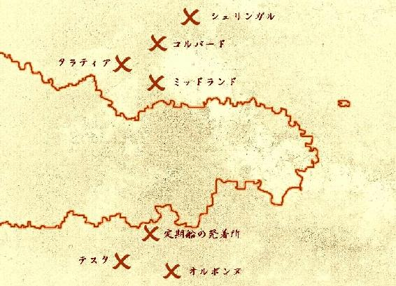

| 魔女と双子のポリティクス（２）《最終巻》 | |
| 姉崎あきか | |
| eieiPublishing (2017) | |
姉崎あきか
＜表紙イラスト提供＞
人物：ゆうひな（http://blog.goo.ne.jp/akarise）
背景：しじみのおすまし（http://www7b.biglobe.ne.jp/~osumashi/）
月：幻想素材†銀の月†（http://ginnotuki.webnode.jp/）
フォント：びゅんびゅん→SSS（http://sapphire.hacca.jp/）

定期船ウミニャコ丸が、大小の船艇がひしめきあうミッドランドの港に到着したのは、船客のみなが昼食を終え、しばしの食休みをくつろいだ後だった。
デッキから臨むミッドランドの街並みは、まさに大貿易都市といった名に恥じることのない、広大な都会のそれであった。
定期船の着いた港のすぐそばから、輸入品を商う店々が、まるで果てなく続くように思えるほどに、連なっていた。
珍しい異国の品々を所狭しと並べている露店の数々が、中央の大通りへと押しつめられて伸びている。
掛け橋を渡って、港へ降り立とうとしているカイルたちの耳にも、客を引いたり、冷やかし客を追い払う商人たちの声や、品物をなんとか値切ろうとする収集家の手慣れた言いまわしなどが、にぎやかに届いてきた。
「すごい人......」
シエラは港のあまりの人の多さに驚いていた。
「久しぶりじゃのう。相も変わらず、騒がしいところじゃ」
喧騒を嘆く口ぶりでありながら、ミランドラはまんざらでもなさそうだ。興味を引くような品はないだろうかといったように、早くも露店に視線を走らせている。
「はいはーい。定期船ウミニャコ丸、ミッドランド港に到着だよ！ どなたさんもどなたさんも、お忘れ物はありはせぬか？ 焦らないで、慌てないで、順々に下船の方、お願いたてまつる！ 今ミッドランドは魔女の噂で持ちきりなんだって。おっと、お土産買うときに、魔法で代金ちょろまかされたりしないようにね！」
桟橋に降りて、元気よく乗客に下船をうながしているピニャコ。
「ありがとな」
「ピニャコちゃん、ありがとう」
「帰りもよろしく頼むぞ」
三人はピニャコにお礼を言った。
「ところで、ピニャコ、魔女の噂って何なんだ？」
去り際に、カイルがたずねた。
「アタシは船につきっきりだから、見たことないんだけどね。今街ん中では、魔女に会ったって人がいっぱい増えてるらしいんだ。奇跡を起こして人々を幸せにするっていう魔女」
「幸せをもたらす魔女？」
シエラが不思議そうにピニャコの顔をのぞきこんだ。
「そそ。アタシは魔女は見てないけど、魔女を見たって人には何人も会ったよ。なんか、変な感じだったな。何かに憑かれたように、その魔女のことをしきりに褒めてた。偉大なんだってさ」
「ふむ。気になる話じゃのう......」
「カイルたちも運がよければ、魔女の姿見られるかもしれないね。最近はけっこうよく現れるみたいだから」
「そっか。じゃあ婆さん、腰痛でも治してもらうか？」
カイルが笑いながらそう言うと、ピニャコもけらけらと笑いはじめた。
「ワタシは腰痛持ちではないぞ！ 婆さんと呼ぶでない！」
「......あ、そだ。一応、案内やっとく？」
「ん？ オレはわかるからいいけど、そうだな。シエラのためにも、頼むわ」
「やったぁ！ ウミニャコの客、常連ばっかりだったから、しばらくやってなかったんだよね。久しぶりだからはりきっちゃうよ！」
ピニャコはにんまりと笑顔を作って、右手を高く上げ、シエラに向かって語り出した。
「はいはーい。ピニャコの観光案内はじめるよ！ 耳かっぽじってとくと拝聴あれ！」
「いや、別にオレたちは観光で来たわけじゃないんだけどな......」
「まずここ、ミッドランド港は世界中の貴重品、珍品が集まる、貿易港だよ！ ここを中心に、ちっさい露店もあわせて、店の数はざっと五百以上。お土産を買うときは、いくつもまわってみて、きちんと相場を見極めて、ぼったくられないように注意のほど、お願いもうしあげる。さても変わって、北に抜ける大通りを長らくまっすぐ行けば、コルバード帝国！ 防壁に囲まれてるから、正面のばかでっかい門より入る他にはござらぬが、通行許可証を持たぬ奴は用なし、甲斐なし、ろくでなし、門前払いを食らっちゃう。されど壮絶なるは防壁の連なり、中に入れなくても一見の価値はあるよね。それから街を出て北西には、かの名城タラティアの廃墟があるよ！ 静かな夢の跡地に佇んで、詩吟に興じるもよし、歴史に思いをはせるのもまた一興なるかな。はてさて、ミッドランドの名物はと問えば、大図書館、美術館、軍事資料館。大図書館は中央通りから......」
「おいおい、まだ続くのか？」
ピニャコの観光案内は、定期船の乗船客たちがみな降りきったあとも、しばらく続いた。
ミッドランドから西に続く道を少し歩いて、一行はタラティア城下町に辿り着いた。
王政時代の栄華の跡はそのままに、まるで人の姿だけが消えてしまったかのような、ひっそりとした無人の町であった。
立ち並ぶ民家や宿屋は、窓が割れており、中が見通せる。家屋の中は、当時の住民たちが使っていたのであろう、家具や棚がそのまま、ほこりをかぶっている。
夜盗に荒らされでもしたのだろうか、扉の開け放たれた店の陳列棚には、あまり価値のない商品だけが散らばって残っている。
全くといっていいほど傷んでいないタイル貼りの大通りを抜けて、三人は崩れた城門までやってきた。
「これが......タラティア城......」
瓦礫の山々。倒れた石の柱。割れたランプの破片。焼け焦げた城壁......。シエラは巨大な廃墟を目の当たりにして、圧倒されていた。
高価な値がつくだろうとおぼしき遺品はやはり、廃墟荒らしたちの手によって持ち去られており、比較的大きな、簡単には運べそうにない石像や金属碑の残骸だけがぽつぽつとかすかな原型をとどめて、転がっていた。
「あのでっかかった城が、今は見る影もねぇもんな。何度見ても信じらんねぇや」
「形あるもの、いつかは壊れゆく......わかってはおるが、こうしてその地に立ってみると、何か、こみあげてくるものがあるのう。......シエラ？ どこへ行くんじゃ？」
「シエラ、足元に気をつけろよ！」
シエラはローブの裾をひらひらとさせながら、崩れた城門をよけるように、小走りで奥へ向かって行った。
シエラがとまって振り返ったところには、割れた壷や大きな鍋、食器類などが散在していた。
カイルと、遅れてミランドラが、散らばった陶器を踏みわけながら、シエラのそばに辿り着いた。
「ここ、きっと厨房ね。お料理を手伝おうとして、追い返されたこともあったな......とっても懐かしい想い出。わたしと姉さんで、土のおだんごを作ってね、コック長さんに渡したこともあったの。上手にできてるって、すごく褒めてくださって、その日の食卓には、わたしたちの土だんごも並んだんだよ。ふふっ、誰も食べなかったけどね」
シエラは足元の折れ曲がったおたまを手にしながら、懐かしそうに目を細めて、ほほ笑んだ。
「どうやら順調に思い出している様子じゃな」
ミランドラは満足げに何度もうなずいている。
「焦んなくていいからな、シエラ」
「ええ。ありがとう」
そう言うとシエラはまた、ちょこちょこと小走りで、奥へと駆けていった。
カイルがそれを追う。ミランドラはおぼつかない足取りで、花柄の傘を杖のようにつきながら、ついて行った。
シエラがとまった場所には、ばらばらになった棚のようなものがいくつも、積み重なっていた。
「ここは図書室。姉さんと一緒に、ここでじいやに勉強を教わったんだ。姉さんはわたしよりも文字を覚えるのが早くて、お勉強の時間が終わったあとに、よく姉さんに絵本を読んでもらったの。懐かしいなぁ......何度も読んでもらった、高い塔の上に住んでいるお姫様のお話......挿絵のお姫様の顔がなんだかへんてこで、ふたりでよく笑ってた」
「お姉さんと仲良しだったんだな、シエラは」
「ええ。カミラ姉さんと、ずっと一緒に育ってきた。いつも同じ遊びをして、同じ歌を歌って......でも......いつからだろう、姉さんの様子が変わってしまって......」
シエラは思いつめたように目を伏せ、うつむきながら歩き出した。
やがて三人は、焦げた絨毯や傷ついて透明でなくなったガラスの破片が散らばっている場所に着いた。
「ここは大広間ね。二階へあがる大きな階段があった......」
それきりシエラは小さな唇をきつく結び、黙っていた。
カイルとミランドラは不安げにシエラを見つめていた。
そして......。
「姉さん......どうしたの？」
ローブの腰のところをきつく握りながらうつむいていたシエラの口から、震える声がもれた。
「早く、逃げなきゃ！ 姉さん、早く！ ......何をしているの？ ......やめて。やめて、姉さん！」
突然、シエラが体を揺さぶり、叫びはじめた。うつろな緑のまなざしが、誰もいない宙を見ている。
「どうした、シエラっ！」
シエラの肩に手をやろうとしたカイルを、ミランドラが制した。ミランドラは目を閉じ、小さく首を横に振った。
「何かを思い出そうとしておるのじゃろう。......下手に刺激せんほうがええ」
「姉さん！ 誰か！ 姉さんが！ やめて！ 駄目、姉さん！」
シエラの叫びはしばらく続いた。
次第にその声が小さくなり、シエラはふたたび沈黙にもどった。そして、張りつめた糸が切れたように、シエラの全身から力が抜け、体が傾いた。
倒れゆくシエラの華奢な上体を、カイルが受け止めた。
「......大丈夫か？」
目を閉ざしたシエラの顔は、血が抜けたように、蒼かった。
「どこかで休ませたほうがええじゃろう」
「そうだな。でもどこで？」
カイルはシエラの背中と膝を持って両腕で抱いた。
「この廃墟でシエラを寝かせる場所などないじゃろう。城下町まで戻るしかないかのう......」
「どっか崩壊をまぬがれた......、そうだな......地下室みたいなもんがあればいいんだけどな」
「ふむ。地下室か。実は先から気になっておったことがあってのう......」
「ん？」
ミランドラが指をさした瓦礫の下には、穴のようなものが開いていた。
シエラを抱いたカイルがそばによって見てみる。
「ビンゴじゃねえか！ これ、地下に降りる階段だろ。だけど、この柱が邪魔だな」
穴の大半をふさいでいる石柱をどかそうと蹴飛ばしながら、カイルが言った。
「だめだ。重すぎる」
「カイルさがっておれ！」
ミランドラはカイルにそう命じると、足元の廃材をのけはじめた。
カイルが離れるのを確認すると、ミランドラはあらわれた土の地面に、オレンジ色の傘の先で、文字を書いた。
ミランドラが気をこめると、文字が浮かびあがり、光を放つ。
すると、地面から太い腕が生え、轟音とともに伸びはじめた。
地面が揺れ、瓦礫が小刻みに音を立てる。
土や石の混じった硬そうな腕は、踊るように空中でまわり、穴をふさいでいた石柱をつかんだ。
そのまま石柱は腕によって投げられ、遠くで瓦礫を巻き上げながら落ちた。
腕は得意そうに拳を握り、親指を立て、光の中へ消えた。
地下へと続く、階段があらわれていた。
「何だよこれ？」
「ほう......」
薄暗い階段を降り、地下室を目の前にした途端、ふたりは驚きの声をあげた。
地上の光が届かないほどに曲がりくねった長い階段をおりてきたはずであった。しかし、地下深いその部屋は、うっすらと青白い光に満ちていた。ひんやりとした、乾いた空気が頬を撫でる。
気を失ったシエラを抱いたカイルとミランドラは、だだ広い地下室に足音を響かせながら、階段の最後の一段を降りた。
青白い光は、床に描かれた図形と文字から放たれていた。
正三角形を上下にふたつ組み合わせた六芒星。外側には三重の同心円がそれを取り囲んでいる。円と円の間には、びっしりと隙間なく、文字が刻まれていた。
「これって、ミランドラのいつも書いてる文字だよな？」
「さよう、古代文字じゃ。それに、この図形......魔方陣じゃな、これは。しかもかなり強い力を秘めておる。いまだに光を放ちおって......これを描いたのはたいそうな魔法の使い手じゃよ。あるいはひとりの手によるものではないのかもしれんのう」
「何だってこんなところに？ 一体何のための魔方陣なんだ？ ......おっと、シエラ、ごめんよ。ちっと寝心地悪いかもしれねえが......」
カイルはシエラを床に寝かせた。頭が直接石の床につかないように、右手を後頭部に添えて、枕のようにしている。
「さあ......ワタシにもよくわからんが......これは、何かを封印するための魔法じゃな」
「封印？」
カイルがシエラの様子を気遣いながらたずねた。
「ふむ。そうじゃのう......少しばかりうんちくを語ってもよいかの？」
「ああ、いいぜ。長くならないんならな」
「ふむ。カイル、その文字が目に入るじゃろう」
ミランドラが傘の先で指したのは、魔方陣の外側の同心円に刻まれた文字だった。
「この棒が二本交わってるようなやつか？」
「そうじゃ。それはラムダといってな、古代語では消失の意味をあらわす記号じゃ」
「なるほど......」
見ると、魔法陣のいたるところに、ミランドラが示した記号が散らばっている。
「例えば......そうじゃな、暴漢に襲われた者があったとするじゃろう。その者が隙をついてどこかにラムダを書くとする。さすれば気合をこめるだけで、相手の戦意を喪失させることができるわけじゃ。線を二本ひくだけじゃから、一瞬でできあがるじゃろ？ 何人もの兎人が、この初歩的な魔法で、愚かな人間の暴行を凌いだもんじゃ」
「心に働きかける魔法、ってことか？」
「そうじゃ。主は飲みこみが早いのう。じゃから、この魔法は先のように、邪魔な柱を動かしたいときには用いることはできんわけじゃ」
「で、この魔方陣は一体何を鎮めてるんだ？」
「うむ......それはワタシにもわからんのう。それに、光を放ってはおるが、今はそれだけじゃ。見るに、今も何かに作用しておるわけではないようじゃの。ラムダは初歩的な魔法とは言ったが、ここまで広大な方陣となると、話は違ってくる。発動すればかなりの力を持つことじゃろう。......一体何に使うのか、見当もつかんのう」
「ミランドラ、試しに使ってみろよ」
「馬鹿者！ 魔法を習得して数十年、しかも兎人でもないワタシに、こんな魔方陣が使いこなせるわけなかろう。主はワタシの命を潰す気か！」
「はっはっは。冗談だよ、本気にすんなって。しかし......そんなにすげぇ魔法なのか、これは」
ふと、カイルの掌の上で、シエラの頭が小刻みに動いた。
ゆっくりと、目が開いた。
「......あれ？ ここは？」
「シエラ、大丈夫か？ ここはタラティア城の地下室さ」
「ええ。さっきはごめんなさい。心が......記憶が......ざわめき出して。でも不思議ね。ここにいると、なんだか嘘みたいに静かな気持ちになる」
シエラは体を起こし、辺りを見まわした。巨大な魔方陣に目をとめ、驚いたように目を大きくした。
「主の波立った心を静めたのは、おそらくこの魔方陣の力かもしれんのう。......あるいはカイルに抱きかかえられておったからか？ ほっほっほっほっ」
「ここまで運んできてくれたの？ ありがとう」
シエラはカイルの顔を覗きこんで、ぺこりと頭をさげた。
「まあな。気にすんなって。婆さんも、余計なことを言うでない」
照れたようにミランドラの口調を真似るカイル。三人は温かい笑顔になった。
シエラの顔には血の気がもどり、頬がほんのり赤く色づいていた。
「あの......」
「色々と思い出したようじゃが、話せるときでええぞ。焦ることはない」
「そうだな。シエラ、ミッドランドまで歩けるか？ 宿屋でも探して、あったかい飯でも食いながら、ちょっとずつ聞かせてくれよな」
「......ええ。ふたりとも、ごめんね」
「ふむ。......引き返す前に、ひとつよいか？」
「どうした、ミランドラ？」
ミランドラは大きな魔方陣を見つめながら、まわりをしばらく歩いた。
「これかの......」
立ちどまったところで、短い傘を大きく振り上げ、地面に打ちつける。
すると、青白い光が強さを増し、地下室は一瞬まばゆいほどに明るくなった。石の地面が軋むような音を立てて揺れた。
光と揺れがおさまった。魔方陣の中心に目を遣ると、六芒星の角に、ひとつおきに台座のようなものがあらわれていた。
「やはりのう......」
カイルとシエラは突如あわられたみっつの石の台座に、驚き目をみはっていた。
「うんちくをいいかな？」
ミランドラは得意げに語りはじめた。
「案ずるな、手短に話すゆえ。......方陣の古代文字の中に気になる文字を見つけたんじゃよ。媒介によって、魔力を増幅させるための記号じゃ。つまり、この方陣の中心に何かの品を捧げることで、魔法陣が本来持っている以上の効力が出るというわけじゃ」
カイルとシエラが手前の台座に歩みよった。
台座の上に深く彫りこまれた模様の中に、丸い大きめの穴があった。穴の奥から、怪しげな赤い光がもれている。
「このみっつの台座に何か置けってことか？」
「そうじゃ。......しかし、方陣のみでは飽きたらず、触媒まで......まったくもって何に使うものなのか、予想もつかん」
「これ、もしかして......」
シエラがローブの内側に垂らしていたブラッディ・アイを取り出した。
「ほら、似てるでしょ？」
シエラの言うとおり、深い赤色のルビーを囲む装飾金具の柄が、台座の幾何学模様に繋がっているように見えた。
シエラは首飾りを外し、丸く穿たれた穴にはめこんだ。
台形の台座が赤く、輝き出した。
「ほう......」
ミランドラは歩みより、隣の台座を覗きこんだ。
穴の奥から届く青い光に照らされ、ミランドラの顔のしわが不気味に青白く浮かびあがった。
「そうなると、こっちは......主らの言っておった、ティアーズ・アイを収めるべき所かのう」
「ああ、たぶんそうだろうな。けどよ、その黄色く光ってるほうは、じゃあ何なんだ？」
三人は赤く輝く台座はそのままに、残りの台座をのぞきこんだ。
「アイってからには全部でふたつだとばっかり思いこんでたけどよ、みっつめの宝石が、どっかにあるのかもしれねぇな」
「ふむ。この色からして、おそらくトパーズか何かじゃろう」
「もともとはみんな、ここにあったものなのかな？」
シエラがブラッディ・アイを取り外すと、台座の赤光が弱まった。もとのようにローブの下に身につけたとき、カイルが大きく声をあげた。
「あっ！」
「何事じゃ、カイル？ 驚かすでない」
「見ろよ」
カイルにうながされ、ふたりは地下室の奥に目をやった。
倒れた柱と柱の間から、白い毛玉のようなものが飛び出ている。かすかに動いているようにも見受けられた。
三人は裏側にまわりこむと、同時に驚きの声をあげた。
不健康に色つやの損なわれた、白い毛に覆われた丸顔。弱ったように垂れ下がっている白い毛並みの耳の根元は、片方だけ紫の毛が輪のように生えている。膝を抱えこむように伸びた、やはり白い毛並みの腕。小さくたたまれた、白い足......。
うずくまって、小さく丸くなっているのは、豪奢な鎧をまとった兎人だった。
「ラムザン？」
「ラムザンっ！」
シエラとミランドラが同時に声をあげた。
「えっ？ ふたりとも知りあいか？」
カイルは振り返って、うずくまった兎人の名を呼ぶふたりを見つめた。
「息は......まだあるようだな」
カイルは、細いひげの伸びた兎人の口元に耳をあて、そう言った。
と、そのとき、兎人のまぶたが開き、透き通った赤い双眸があらわになった。
鎧の腰の剣を抜き、兎人はカイルに斬りかかった。
カイルは胸元から素早く取り出した短剣でそれを受ける。
「やるかっ！」
カイルは受けた剣を勢いよく払い、後方に飛び退いた。
「ラムザン！」
「ラムザン、やめんか！」
少女と老婆に名を呼ばれ、兎人はおとなしくなり、静かに剣を収めた。
「こいつが......もしかして、シエラの言ってた兎人なのか？」
カイルは布の服の内側に短剣をしまいながら、たずねた。
「ええ。......本当にひさしぶり。ラムザン、わたしがわかる？」
ラムザンと呼ばれた長身の兎人は、美しい赤い瞳を見開いて、シエラとミランドラを交互に見ていた。
「どうしたの？ 前みたいにわたしの名前を呼んでみて」
「......」
ラムザンは息を荒げ、肩を上下させながらシエラを黙って見つめていた。
「どうした、ラムザン？ 話せばよかろう」
ミランドラは怒ったような厳しい表情を作って言った。
「......ふん、人間の言葉を話さないつもりか。村を捨てた者がいまさら兎人の掟を守って何になる！」
「待って、おばあちゃん。ラムザン、すごく衰弱してる......」
「ラムザン！ 主など大火に包まれて焼けてしまえばよかったんじゃ！」
「おい、ミランドラ、何を言っ......」
けわしい表情で怒鳴っていたミランドラの肩が震え出した。
やがてミランドラの目に涙があふれ、目じりのしわに流れこんだ。
「......よく......生きておったのう......」
しばらくの間、ミランドラはラムザンを抱きしめて、号泣していた。
無言の兎人をきつく抱き、泣きじゃくる老婆を、カイルとシエラは黙って見守っていた。
ミランドラはローブの袖で涙をぬぐい、顔をあげた。
「すまない。みっともないところを見せてしもうて。......年を取ると涙もろくなってしまって、いかんのう」
しゃくりあげながら、ミランドラは笑顔でそう言った。
「ああ。気にすんなよな」
「今さら隠し立ててもしょうがないじゃろう。......老婆のたわごとじゃが、聞いてくれるか？」
「うん、おばあちゃん。ぜひ聞かせて」
ミランドラは遠い目つきをして、おもむろに語りはじめた。
「......むかしむかしのことじゃ。オルボンヌの街にひとりの少女が住んでおった。貧しい家の生まれじゃが、ミッドランドの貧民街に比べれば、大したことはない。その日暮らしじゃったが、両親にも恵まれ、ささやかじゃが幸せな家庭じゃった。少女はある日、近く森の中で樹の根につまずいて怪我を負った。大きな傷でもあるまいに、ひとり泣きわめく少女の前に、ひとりの兎人が現れおった。最初はたいそう驚いたそうな。少女は逃げようとした。じゃが、転んだところをその兎人に起こされてのう。兎人は不思議な力で少女の傷をたちまちに治しよった。『大丈夫？』と声をかけられ、兎人が喋りおることも知らなかったその少女は、またもや驚いたそうな。安心した少女はその日、陽が落ちるまで兎人と語りあった。家が貧しいことを告げると、兎人は次の日から少女の家まで、果物や木の実を届けてくれるようになった」
カイルとシエラはじっとミランドラのひとり語りに聞き入っていた。表情は読めないが、ラムザンもミランドラを見下ろしながら、小刻みに耳を動かしていた。
「少女が兎人と仲良くしておるのを知った両親は、今後その兎人に会わないよう、少女に命じた。じゃが、少女は親の目を盗み、森の中で何度も兎人と語りあった。少女が成長するにつれ、少女の兎人への気持ちは、恋心へと変わっていった。じゃが、それを両親に告げたのが間違いじゃった。兎人と結婚したいと言う少女は、父親からは畜生者扱いを受け、母親からは泣いて哀れみの目を向けられ、いつか少女は家を出ようと決意した。駆け落ちというやつじゃな。少女と兎人はテスタの村でひっそりと寄りそい暮らし、少女はやがて子を宿した。その兎人は流行り病にかかってのう、残念ながら、わが子の顔を拝む前に亡くなってしもうた。遺された少女は、生まれた子供が人間であったら、かわいそうじゃが、オルボンヌの孤児院に預け、何も知らせずに人間としての人生を歩ませようと思っておった。じゃが、産声をあげた男の子は、兎人の姿をしておった......」
「もしかして......」
「さよう。ラムザンはワタシの子じゃ」
「そうだったの......ごめんなさい。わたしたちが連れて行ってしまって......」
「ほっほっ。シエラがあやまることはなかろう。ラムザンが自分で決めたことじゃ。......しかし、血は争えんものじゃのう。人間の世界を捨てた人間の子が、兎人の村を捨てたんじゃ」
「十年間か......こんなとこに閉じこめられちまって、よく今まで生きてたよな」
「おそらく、ずっと冬眠状態でうずくまっておった......そうじゃろう、ラムザン？」
ミランドラが向き直ってラムザンを見上げた。
ラムザンは何も言わずたたずんでいた。しかし、その首が頷くように小さく動いたようにも見えた。
「この魔方陣もラムザンが描いたのか......いやそんなわけはねぇんだったな」
「うむ。ラムザンはまだ五十余年しか生きておらん。万年生きる兎人の中では、若輩者もいいとこじゃ。こんなたいそうなものが描けるわけなかろう」
「それはそうと、そろそろミッドランドにもどるとするか。シエラ、思い残しはないか？」
「うん。わたしは大丈夫だよ。それよりも、早くラムザンに何か食べさせてあげなきゃ」
「シエラ......すまんのう」
カイルとシエラがラムザンの両脇を抱き支えながら、四人はタラティア城をあとにした。
「おい、ふざけんなよ！ こっちは病人かかえてんだぜ！」
「そんなの知ったこっちゃないね。とにかく他をあたんな」
「ちっ。しけた宿屋が！」
これで二十軒目の宿屋をあたったことになる。しかしどの宿も、カイルとシエラがかついでいるラムザンの姿を見るやいなや、そろって宿泊を断った。
丁寧な口調で遠慮がちに追い返す宿もあったが、たいていの宿屋は嫌なものでも見る目つきで、兎人連れの一行をはねつけた。
ミッドランドの中央を貫く大通りにたたずんで、四人は途方に暮れていた。
陽が大きく西に落ち、夕暮れがはじまろうとしていた。洒落た造りの街灯がともりはじめていた。
大通りから少し東にずれたところにある広場に、人だかりができている。
「なんだ？ あの人ごみ」
小走りで広場に向かって行く通行人につられるようにして、四人は人だかりに混じった。
小高く段になって盛り上がったところをまるで演説台のようにして、黒ずくめの人物がたたずんでいる。
フードを目深にかぶっていて、顔はうかがえなかったが、長く美しい黒髪が、まっすぐに腰のあたりまで垂れていた。
カイルたちは、人ごみを押しのけて、さらに近づいた。
ひとりで立てるから、とでもいうように、ラムザンはかかえられた腕をゆっくり離した。
ラムザンが支えなく立てたのを確認すると、四人は前方に向き直った。
黒いマントをまとい、青白い顔をした壇上の人物が口を開いた。騒がしかった広場が急に静まりかえる。
「......この世界に奇跡と呼ばれるものが存在する。何者も畏れることはない。すべての生けるものの挙動にそれは宿る。死してなお、朽ちることがないであろう。見るがいい」
いくつもの声が重なったような、神秘的な声音だった。ひとつひとつの言葉が、まるで空間を歪ませるかのように、聞く者の耳に重く、届いた。
黒いマントの下から、手がゆっくりと前方に伸びた。
すると、最前列に陣取っていた初老の女性が、まるで何かに引っ張られたかのように宙に浮かび、黒マントの胸元まで移動した。
一瞬だった。
黒いマントの奥から、もう片方の手が伸び、ナイフを握ったかぼそいその手が女性の喉元を切り裂いた。
重苦しい断末魔の声。
激しい返り血が近くの聴衆の顔にかかった。
「きゃっ」
思わずシエラが声をあげた。
ラムザンの体がぴくりと動いた。
カイルもミランドラも、瞬間何が起こったのか察せず、微動だにできなかった。
喉から血を流し、小刻みに痙攣していたその女性は、やがて息絶え、動かなくなった。
「おい、どういうことだよ！」
カイルは隣にいた聴衆のひとりにつかみかかり、問いただした。
「しっ。静かにしてなさい」
襟元をつかまれた男性はカイルを制し、正面に向き直った。
見れば聴衆は緊張と、そして何かを期待しているかのような面持ちで成り行きを見守っている。
黒マントの人物は切り裂いた女性を地面に落とした。無惨に横たわった血まみれの死者の上に、掌をかざす。
黒い光が満ちた。
風がおこり、マントの上の長い黒髪が靡いた。
光と風が強さを増す。
深くかぶられたフードが裏返り、隠されていた顔があらわになった。
悲しげな顔をした、美しい少女だった。
鋭く吊りあがった目は、それが少女の面差しであるというよりも、常にそういった表情を崩さないよう保っているような感じであった。
今にも泣き崩れてもおかしくないような、暗い、寂しげな顔立ち......。
「......姉さん？」
シエラが小さい声を出した。けげんそうに振り返るカイル。
そのとき。
「おー！」
聴衆がいっせいに声をあげた。
黒髪の少女の足元に横たわっていた女性が、息をふきかえし、体を起こしたのだ。
初老の女性は血の飛び散った顔に、満足げな笑みを浮かべ、壇上を降りていった。
しばしの沈黙。
やがて聴衆たちが口をそろえて、ひとつの名前を連呼しはじめた。
狂ったように、何度も何度も、その名を絶叫し続けた。
「カミラ！ カミラ！ カミラ！ カミラ！ カミラ！ ......」
「カミラ......って......まさか。おい、シエラ？」
「シエラ、どこへ行くんじゃ」
拳をあげ叫びつづける群衆をかきわけ、シエラは黒ずくめの少女のいる場所へと向かって行った。
「シエラ！ 待てよ！」
我を失った聴衆たちをよけるのに難儀しながら、カイルがそのあとを追う。
人々は同じ表情、同じ姿勢で、同じ名前を叫び続けている。
その目はまるで瞳孔が開いたようにうつろで、感情を失っていた。
「姉さん！」
シエラは最前列まで来て、少女に向かって呼びかけた。
しかし、その声は空しく群集の絶叫にかき消された。
少女の足が地を離れた。
宙に浮かんだ少女は、黒髪を靡かせながら、後方に飛んで行こうとしていた。
――カミラ姉さん！ シエラよ！
そのとき、ふたりのまなざしが、しっかりと、互いをとらえた......。
時が止まったかのようだった。
ほんの一瞬であったが、見つめあった時間が、シエラにはとても長いものに感じられた......。
黒髪の少女はゆっくりと後ろを向き、マントをひるがえし、そのまま夕闇の空にかき消えた。
血に染まった誰もいない壇上に向かって、狂ったような絶叫が続いていた。
四人が宿屋の食堂で夕食を食べはじめたとき、すでに窓の外は暗くなっていた。
泊めてくれる宿を、さんざん探しまわった。
北の貧民街近くのさびれた宿。ラムザンの姿を目にしたとき、やはり宿屋の主人は顔をしかめた。しかし、カイルが定期船の賭博場で儲けた金を積み上げると、しぶしぶ宿泊を了解した。
豪勢な食事とはいえないが、味つけの薄い焼魚の数々も、きのこの煮こみスープも、木イチゴのアイスも、何度もおかわりができ、食べきれないくらいの量があった。
ラムザンは脇目も振らず、ひたすらシエラによそってもらった料理をかきこんでいる。
ミランドラが肩をすくめながら、それを見守っていた。
ラムザンのたいらげる速度が心持ち遅くなったころに、ミランドラがたずねた。
「シエラ、苦でなかったら、そろそろ話してもらえんかのう。無理にとは言わん。じゃが、色々とあったからのう、主のことが心配で......」
「うん、ありがとう。もちろん話すつもり......だけど......何から話したらいいのか......。あっ、これ、おいしい」
シエラは白っぽいぶつ切りの植物を口にしながら言った。
「アーティチョークじゃな。オリーブ油に漬けたアザミのつぼみじゃ。なかなか洒落たもんを出す宿じゃのう」
ミランドラもひと切れ口にした。
「まあ、ゆっくりでいいぜ。......で、やっぱりあの女の子、シエラのお姉さんだったのか？」
カイルがゆでた蛸の足を口に運びながらたずねた。
「うん......それは間違いない......と思う」
「言われてみれば、確かにあの少女、表情こそ違え、シエラとそっくりな顔立ちをしておったのう」
ミランドラはラムザンを見守りながら、そう言った。
「ピニャコちゃんが言ってた魔女って......」
「ふむ。おそらくカミラのことなのじゃろう」
「それにしてもよ、まわりのやつらの様子、ちっと変だったよな。なんだか生身の人間じゃねぇみたいな顔して」
「目の前で人が殺されて、歓喜の声をあげておった。あな恐ろしや......じゃが、それもまた人間の本性なのかもしれぬが」
「ところで、婆さんよ。兎人じゃねぇ魔法使いは、ミランドラひとりじゃなかったのか？ ありゃ、どう見たって魔法だぜ？」
「ふむ。確かにのう......。じゃが、カミラのおこした奇跡は、兎人に伝わる古代魔法とはずいぶんと勝手が違うておる」
「おばあちゃんのは、こうやって、地面に文字を書くものね、いつも」
シエラは傘を握って動かすような仕草をした。
「さよう。それに死人を蘇らすことなんぞ、兎人たちにはできんよ。シエラ、カミラは以前から、あんな力を持っておったのか？」
「ううん。わたしも初めて見た......でも、そう......えっと、十年前のこと話すね」
シエラはゆっくりと、蘇った記憶を話しはじめた。
「姉さんの様子がおかしくなったのは、あの大火のひと月前くらいからかな。それまではわたしたちはいつも一緒に遊んでて、......そう、ラムザンと三人でよくおままごとしたりもしてたっけ。でも、いつからか、カミラ姉さんはひとりでいるのを好むようになって、口数も減って......。わたしたち、同じ部屋で寝ていたんだけど、夜中に姉さんが部屋を出て行くのを何度も目にするようになったのも、その頃から。それで、城が......燃えたのが......そう、ちょうどわたしたちの誕生日だった」
「わたしたち......？」
「うん、あのね、カミラ姉さんは、わたしの双子の姉なの」
「ほう、そうじゃったか。どうりで似ておるわけじゃな」
「あの日、ホールで誕生日パーティーがあって、でも、姉さんは行かないって言って、ひとり部屋に残ったの。パーティーのあと、ラムザンと一緒に部屋に帰ったら、中は真っ暗だった。呼びかけても返事がなくて、姉さんは部屋にいないのかと思った。......でも、ラムザンが灯りをつけたとき、姉さんは......わたしたちが部屋を出たときと同じように、窓辺の揺り椅子に座って、真っ暗な外を眺めていた......。真っ青な顔をしていて......わたしたちは、姉さんをベッドに寝かせて、その夜は休んだの」
勢いよく扉を開け入ってきたラムザンに起こされたのは、真夜中だった。隣を見ると、ベッドにカミラの姿はなかった。ラムザンに手を引かれ、燃えさかる炎の中、シエラは王と王妃の寝室の前を通った。出口を熱く焼けた柱にふさがれ、王妃は寝室に閉じこめられていた。シエラはそのときに、マリーズ王妃の手から、炎越しにブラッディ・アイを渡された。誰にも渡してはいけない、と。
「......『シエラ、元気でね』......そう言って、お母さまはわたしにほほ笑みかけてくれた......。その笑顔が......炎に包まれて......」
階下から国王がのぼってきた。ここは任せて逃げろ、そう命じて最後の抱擁をしてくれた父親を残し、シエラはラムザンに引かれて、一階へと降りた。突きあたりを曲がったとき、ちょうど階段の裏に隠れる位置に、逃げようともせずにひとりたたずんでいる華奢な後姿が目に入った。
「......薄笑いを浮かべて、太い蝋燭の火を、破った本のページに燃え移らせて......それが、カミラ姉さんだったの。信じられなかった......今でも、信じられない......」
何度も呼びかけ、やめて、と名前を叫んでも、カミラは全く聞こえないかのように、城に火を放ち続けていた。倒れくる柱に危機を感じ、ラムザンはカミラを残し、シエラの手を引いて走った。城の出口はとうに崩れ、ふさがっていた。ラムザンとシエラは地下の回廊へと逃げた。両側の壁の燭台の導きを追うように、遠く、遠くへ......。
「......それから、倒れてきた柱から、ラムザンが守ってくれて......それから、それから......」
シエラは疲れたように首を横に振った。
「......それからどうなったのか、思い出せないの......」
「......そうか......やっぱり空白の九年間は謎のまま、ってことか」
「ふむ。なるほどのう......。となると残る謎はみっつ、ということじゃな」
「みっつ？」
「さよう。ひとつは、その九年間、シエラはどうしておったのか。ひとつは、カミラの身に何が起こったのか。ひとつは、先の魔方陣と、主の持つブラッディ・アイを含めたみっつの宝石に、一体何の意味があるのか」
「なるほどな」
「こやつが言葉を取りもどせば、少しは話が早くなるんじゃがのう......」
ミランドラが傘の先でラムザンを小突いた。
「そういえば......、姉さんが黄色い宝石を手にしているのを見たことがある気がする......」
「ほんとか？」
「ふむ。みっつめの宝石かもしれんのう」
「だとすると、オレたちが盗んだティアーズ・アイも、その頃にはタラティア城にあったのかもしれねぇな」
「さて、これからどうしたものか」
「シエラ、いっぱい喋って疲れてるだろ？ そろそろ......」
「いつもありがとう。うん。そろそろ休ませてもらってもいい？」
「もちろんじゃよ」
......真夜中のミッドランドの路地裏に、気配を殺して佇むふたつの人影があった。
大通りから、音と灯りがかすかに届いてくる。
夜を通して営業している店の音楽。酔っ払って広場で騒ぐ行商たちの声。立ち並ぶ民家の窓からもれる光。連なる街灯の明滅......。
しかし、表通りのにぎやかな彩りも、その路地裏にはわずかにしか伝わってこない。
暗く、湿った、狭い道。
「断りもなくオルボンヌを出たか。何をするつもりだ？」
ひとつの人影がくぐもった声を出した。
三頭の龍の紋章が肩に描かれた鎧をまとっている、兵士である。
――関係ないだろ。
もうひとつの人影が答えた。
十五歳くらいの、少年であった。
兵士は鼻で笑い、続けた。
「盗賊団にはいずれもどるつもりか？」
――ああ。
「オルボンヌでブラッディ・アイの目撃情報があった。お前の知っていることを全て話せ」
――知らねぇな、何も。
「......ふん。まあいいだろう。しばらくここにいるのなら、革命家と闇ギルドの内情も調べて伝えろ。これが次の指令だ」
――ああ......、わかった......。
「ブラッディ・アイに関する情報を得たら迅速に報告しろとのご命令だ」
しばらく間を空けて、兵士は少年の顎を掴んで言った。
「少しでもおかしな動きをしてみろ。ドゲル様はお前の命など惜しくもないと仰せだ」
少年は無言で兵士の手を払った......。
宿屋の一室で、シエラはうなされていた。
浅い眠りの中、不気味に引きつったカミラの顔が、いくつも現れては消えた。
太い蝋燭を手に薄笑いを浮かべているカミラ。冷ややかな笑顔で聴衆の女性の喉を切り裂くカミラ。
黒いローブに身を包んだカミラのまなざしがシエラを捉え、やがて狂ったように高笑いをはじめた。
目を充血させてきりなく笑う姉の顔が醜く歪み、いくつも、いくつも、増殖した......。
嫌っ。
勢いよく体を起こし、シエラは悪夢から覚めた。額にじっとりと、汗がにじんでいた。
「嫌な夢......」
シエラは宿屋に備えてあった青い上着を羽織ると、夜風に当たりに外へ出た。
宿を出て東へしばらく歩き、角を折れたとき、シエラは足をとめた。
目前には、貧民街が広がっていた。
窓も扉も外れ、風が吹き通っている民家。中を見通せば、室内は大きめのテーブルがやっとひとつ置けるか置けないかくらいの広さしかない。剥き出しの床に、破れ目や継ぎはぎだらけの薄い絨毯が敷かれており、その上に貧相なぼろ布をまとった人々が寄り添い横たわっていた。家具は戸棚がひとつあるばかりで、食材を蓄えておく櫃も見られない。
通りには腐った廃棄の木材で構えられた、屋根つきの寝床が連なっている。もし雨が降ったとしても、気休め程度にしか雨は防げないだろう。木材の間を抜ける風が、中で眠る人たちのぱさついた髪を揺らしていた。
夜泣きの子供をなだめる母親らしき声が、まるで貧民街を流れる耳うるさい音楽であるかのように、いくつも重なって聞こえていた。どこかであがる奇声が、乱れたリズムをさらに混乱におとしめる。
別の道に引き返そう......。
そう思ってシエラは踵を返し、そしてそんな自分を恥じた。
貧民街。ただ貧しい人たちが寄り添いあって暮らしている場所......。なのに、その街並みを自分は怖いと感じた。
話にしか聞いたことがなかった。だが、オルボンヌの孤児たちよりも、ずっと悲惨な、貧民たち......。
シエラはうつろな気持ちで、中央通りへと続く細い裏道を歩いていた。
そのとき――。
何者かに、口をふさがれた。
抵抗する間もなく、右腕が後方にねじ曲げられる。
鼓動が自分の耳に聞こえてくるかのように、激しくなっていた。
声をあげようにも、口が完全にふさがれてしまい、息を吐くこともできない。
「ルビーを出せ」
耳元に男の声がかかった。
シエラは身をよじって、逃げ出そうとする。
「動くと骨が折れるぞ」
掴まれた右腕が背中で上に持ちあげられ、肩の関節が痛む。
シエラは抵抗をやめ、左手で胸元から首飾りを取り出す。
口を覆っていた手が、慣れた手つきで鎖を切る。
シエラはブラッディ・アイを奪われた。
宝石をしまったその手が、腰から剣を引き抜く。
鋭く光る刃がシエラの喉に触れる。
シエラは強く目をつむる......。
「シエラっ！」
男の手がぴくりと動いた。
目を開けると、短剣を手に走ってくるカイルの姿があった。
「動くな」
男の息がふたたび耳にかかる。
カイルはシエラの喉にあてがわれた剣から目を逸らさないように、足をとめた。
「この女の名はシエラというのか。......そうか」
つきつけられた剣が離れ、シエラは勢いよく背中を突き飛ばされた。
カイルが駆けよる。
投げ出され倒れたシエラは、立ちあがると、肩で息をしながら振り返り、男の姿を目にした。
銀色の髪と瞳。隙のない切れ長の目がまっすぐにふたりを見ていた。軽そうな、ところどころに網目の入った鎧には、刀傷がいくつもついていた。
銀髪の男は剣をしまうと、勢いよく飛翔し、壁を蹴って民家の屋根の上に降りた。
美しい銀色の双眸がカイルたちを見下ろしていた。
「逃がすかっ！」
カイルは窓枠を段にしてジャンプし、男のいた場所に降り立った。
シエラは動悸した胸に手をあてながら見上げていた。
やがて、屋根の上で首をあちこちに動かしていたカイルが、シエラのもとに降りてきた。
「......ちくしょう。一瞬で見失っちまった。あいつ、何者なんだ」
ルグラン一行は宿に着いていた。
入り口で主人に宿泊代を払うルグランに、ルカが不満をもらす。
「親方ー。もっといい宿がいいッスよ」
「贅沢を言うな！ 大バカ者！」
テーブルを共振させるほどの大声で、ルグランがルカを怒鳴った。
「ルカ、親方は大金をすって気が立ってるんです。ここは素直に従いましょう」
ゼルが小声でルカをさとした。
定期船内の賭博場で、ルグランは大損をしてしまったのだった。順調に賭け金を増やしていたのに、調子に乗って引き際を見極めなかったのが敗因だった。結局ルグランは宿代に予定していた金の多くを、ディーラーに収めてしまった。
「三部屋でいいかい？」
眠そうな目でたずねる宿屋の主人にルグランは、
「ひと部屋で頼む」
と返した。
「えー、オイラたち、雑魚寝ッスか？」
「ルカ」
ゼルがルカの肩に手を置き、首を横に振った。
そのとき、宿屋の扉が開いた。
落ちこんだ顔で入ってきたのは、カイルとシエラだった。
「カイル！」
「アニキ！」
「カイルさん！」
三人は口をそろえて仲間の名を呼んだ。
「ルグラン！ ルカ！ ゼル！ どうしてここに？ いや、そんなことは後でいい。ルグラン、大変なんだ！」
興奮したように、カイルが声を荒げた。
「なんだなんだ。一体どうした？」
ルグランがカイルの真剣なまなざしを見つめ返す。
「ブラッディ・アイが......奪われた」
ルグランが借りた部屋に、七人全員が集まっていた。
カイル、シエラ、ミランドラ、ラムザン、ルグラン、ルカ、ゼル。
狭いひとり用の部屋はもちろん椅子の数が足りるはずもなく、シエラ、ミランドラ、ラムザンがベッドに腰をおろし、ルグランがひとつだけあった椅子に座り、残りの盗賊たち三人は床にあぐらをかいていた。
カイルたちが旅のいきさつを話すのに、相当の時間がかかった。
とりわけラムザンの姿を目にした途端、
「何ッスかその兎人は！」
と嫌悪の目つきをして取り乱したルカを説得するのには難儀した。
全てを聞き終えた今でも、ルカはまるで汚いものでも見る目つきで、ラムザンから遠く離れて座っていた。
さらに、シエラがタラティア皇女であったことを耳にしたとき、ルカとゼルは、文字通り飛びあがって驚いた。
ミランドラの魔法を目の当たりにしたときも、同様だった。
ひと通り話が終わり、一瞬の沈黙が生まれたとき、ルグランが口を開いた。
「......シエラちゃんを襲った人物は、その風貌からして、シルヴァってやつだ。間違いねぇ」
「ルグラン、知ってるのか？」
カイルをはじめ、一同はルグランの大きな顔をまじまじと見つめた。
「ああ。トリオンズにティアーズ・アイの依頼をしてきたのも、そいつだ。指名手配を受けた人間を追う、賞金稼ぎ。いってぇいくつの賞金首を金に替えてきたんだか、数え切れねぇくらいだ。相当の実力者だな」
「あ、もしかして親方がいつも、『ヤツは信頼できる』って言ってる、そいつッスか？」
「そうだ」
「ちょっと待てよルグラン！ ヤツは......シルヴァはシエラを殺そうとしたんだぜ！ 信頼できるもなにもねぇだろ！」
「まあ待て。シエラちゃん、シルヴァはほんとうにあんたの喉を裂こうとしたのか？」
ルグランに問われ、シエラはとまどいがちに答える。
「ええ......。ルビーを奪ったあと、シルヴァは立ち去ろうともせずに、わたしの喉に剣をつきつけて......あのときカイルが来てくれなかったら、わたし、きっと......。そうだわ、カイルがわたしの名前を呼んだとき、彼の手が止まったように感じた......」
「そうか......」
「ああ、そういや、『こいつの名はシエラと言うのか』ってオレに確認してきたな」
「もしや、シエラの名を聞いて、シエラがタラティア皇女であることに感づいたのかもしれんのう」
そう言うミランドラにルグランとゼルが相槌を打つ。
「俺もそう思う。シルヴァがブラッディ・アイがもともとタラティアにあったことを知っていたとすればなおさらだ」
「確かに、宝石とシエラさんの名から、王家の生き残りの可能性に思い当たったとしても、そうおかしくはありませんね」
「でも、そうだとしても冷酷無比の賞金稼ぎが、なんでタラティアの血筋を生かさなきゃならないんッスか？ 理由がわかんないッスね」
「ルグラン、隠してねぇで話してくれよな！ シルヴァが何者なのか。なんでルグランがそんなに信用してるのか」
カイルが激しい口調で、ルグランにつっかかった。
「ああ、この際しょうがねぇだろう。ほんとはお前らにはとうぶん黙っとこうと思ってたんだが......。シルヴァは今は......帝国の人間だ」
「何ッスかそれ！ じゃあ、オイラたちは帝国の依頼のために仕事してたわけッスか！」
たまらずルカが声を荒げる。
「黙って話を聞け！ シルヴァは、帝国についてるとは言っても、ドゲルみたいなヤツらとは違う......」
ふたりの出会いは、ルグランがまだトリオンズを組織する前の、駆け出しの盗賊の頃だった。もちろん王政が崩れる前の話である。
駆け出しとはいっても、早熟なルグランは、ミッドランドやコルバードの貴族たちから何度も山ほどの財宝を盗んで、その名を轟かせていた。
一方、同じく賞金首を狩りはじめたばかりであったシルヴァも、多いときはひと月に五十もの件数をこなし、コルバード軍からもすでに一目置かれていた。
毎度のようにルグランに高価な品々を盗まれていたコルバードの貴族たちは、あるとき協力して、ルグランの首に膨大な額の賞金をかけた。
ともに早熟で優秀な盗賊と賞金稼ぎ。ルグランとシルヴァがある夜はちあわせるまでに、それほどの時間はかからなかった。
コルバードの貴族屋敷の屋根の上で、ふたりは対峙した。
互角であった。
ぶつかり合った剣と剣は飛ばされ、ルグランの放った火薬のすりこまれた導火線がシルヴァの足元に巻きつき、シルヴァが懐から取り出した銃が、着火器を手にしたルグランの額を狙った。
続ければ相打ちになる――ふたりはそう判断した。
そのときに交された会話で、ふたりは互いを認めあった。
ルグランは盗品を金に代え、貧民や孤児院に分け与えているという。
シルヴァは実力者となってコルバード軍事国に仕え、発言権を持てるようになったら、貧民街の解放を実現するつもりだという。
一度は捨てあった命。以後ふたりは互いを殺めぬ約束を交し、互いの夢が現実となるよう、可能なかぎり協力しあうことも契った。
「......だが、盗賊も賞金稼ぎも孤独な稼業だ。お互いの利害を侵すことがあったら、容赦はしねぇ。俺たちはそんな仲だ」
いつもの威厳をどこに置いてきたのやら、ルグランは懐かしそうに目を細めながら、昔語りを終えた。
「ううっ。男の友情ッスね」
ルカは鼻をすすりながら、聞いているうちにあふれてきた涙をぬぐっていた。
「ヤツはヤツなりに葛藤を抱えて仕事をしてるんだ。俺は銀色の瞳に宿る強い意志を、今でも信じている」
「......それは、わかったけどよ、どうにかブラッディ・アイをとりもどす方法はねぇのか？ ルグラン、シルヴァに言って返してもらえねぇか？」
「俺が言って返してもらえるもんなら、ハナっから奪いやしねえ。シルヴァはそういうヤツだ」
「じゃあ、オレたちが帝国に忍びこんで......」
「バカカイル！ お前がかなう相手だと思うか？ ひと目みて存分にわかっただろう！」
「だからって......何もせずにいられるかってんだ！」
大声をあげるカイルから目をそらし、ルグランはシエラに目をやった。
「ところで、シエラちゃん、もう充分じゃないか？ 大火の後の記憶がもどってねぇとはいえ、いずれ思い出すときがくるかもしれねぇ。皇女が生きていることが知れてしまった。おまけに帝国は例の宝石を集めてるとなりゃ、これ以上首をつっこむのは......」
「ルグラン！ 何言ってんだよ！」
「熱くなるなカイル。殺されちまっちゃ元も子もねぇだろう。オルボンヌにでももどって、ひっそりとしてりゃ、シエラちゃんの身に危険が迫ることもいずれなくなるだろう。何事も引き際が肝心だ、違うか？」
「親方、そのセリフは船んなかのカジノで言って欲しかったッスね」
「ルカ、茶化さない！」
不満をたれるルカの口をゼルがふさぐ。
「ルグランさん......ありがとうございます。......でも、わたしは......」
突然、ベッドに座っていたラムザンが立ちあがった。
ルカがびくりとして、座ったまま後ずさる。
ラムザンは静かに部屋のドアまで歩いて行った。
「どうしたの、ラムザン？」
後姿にシエラが声をかける。ラムザンは振り返って、赤い目つきを強くした。
「ラムザン......主まさか......ひとりで帝国に行くつもりか？」
ミランドラが声をかけると、ラムザンはぴんと伸びたひげを揺らしてうなずいた。
「待てよ、ラムザン！ お前がひとりで背負うことはねぇ。オレも行くぜ！」
カイルが立ちあがってラムザンのそばによった。
「そうじゃよ、ラムザン」
ミランドラもベッドを後にし、部屋の入り口に向かった。
ドアの前に佇む三人の姿を見て、シエラは勇気づけられたようにルグランに言った。
「わたし、何もせずにはいられないんです。黙ってオルボンヌに引き返すなんてできない。それに姉さんのことも、見なかったことにはできません」
ルグランは黙ってシエラを見つめていた。心なしか、ひげもじゃの口元に笑みを浮かべているようにも見えた。
「......そういうことだ、ルグラン。わりぃな、オレたちは行くぜ！」
ルグランはじっとしていた。やがて、肩をふるわせ、大声で笑いはじめた。
「ガッハッハッハ！ なんだか若さがもどってくるようだぜ！ 主観を超える真実など存在しねぇ......シエラちゃん、あんたがそうしたいんなら、俺たちは止める術を持つわけがねぇ。それどころか、存分に協力させてもらうとするぜ！ ガッハッハッハ」
「な、何だよ、急に。気味わりぃぜ、ルグラン」
カイルはルグランの態度の豹変ぶりをいぶかしんでいた。
「みんな......ありがとう。......巻きこんでしまって、ごめんなさい」
「気にすんなよな！ オレたちが好きでやってることだ。だろ、ルグラン？」
「ガハハハ。そういうわけだ！ だが、今すぐに潜入、ってのは感心しねぇな。まずは闇ギルドに行くのが吉だろう。そこに行きゃ、帝国を目の敵にしてる商人や革命家たちがわんさかいやがる。ヤツらに協力してもらうのが正解だな。......どっちにしろ、俺たちは盗品をギルドまで売っ払いに行くつもりだった。ちょうどいいぜ！」
「親方！ オイラたちも闇ギルドに行っていいんスか？」
「今回の荷物んなかにはギルドで売った方が値が張るものもあるしな。それに......カイルもルカもゼルも、そろそろ一人前の盗賊だ。もういいだろう」
「よっしゃ！」
「やったッス！」
「楽しみです！」
ルグランの弟子たちは手をとりあってはしゃいでいた。
「闇ギルド......？」
シエラが不思議そうにカイルにたずねる。
「ああ、そうさ。言ってみりゃ、闇市みたいなもんだ。ブラックマーケット。ミッドランドを中心に、世界中の盗賊や行商たちが好き勝手な値をつけて、あらゆる品を売ってる。表じゃ買えねぇもんが山ほどあるぜ。その辺の店で手に入るようなものも、飛びあがるくらいに安かったりするんだ」
「夜が明けちまうとギルドに出入りできなくなっちまう。俺たちは船んなかでさんざん寝てきたからいいが、シエラちゃんたちは疲れてるだろう？ 帝国に忍びこむんだったらこれから長丁場になるかもしれねぇ。あんまり時間はねぇが、ちょっとでも休んどくこったな。陽がのぼる前には起こしてやるぜ」
場が解散し、カイルたちは部屋にもどっていった。
七人はまだ真っ暗な早朝のミッドランドを、冷たい風を受けながら闇ギルドに向かった。
起こされたばかりのカイル、シエラ、ラムザンは眠い目をこすりながら、体を震えさせて歩んでいた。
ミランドラは朝が苦手ではない様子で、闇市への期待に胸を高鳴らせながら、軽い足取りをしていた。
闇ギルドの入り口は、帝国を囲む防壁が見えるくらいの場所にある、深夜営業の料亭の中にあった。
足元暗し、といった具合にコルバード帝国の間近にギルドへの入り口があることを知ったカイルたちは、少しばかり驚いたようだった。
聞けば、その料亭以外にも、入り口はミッドランドの街の中にいくつかあるらしく、みなが泊まった宿から一番近かったのが、そこであったらしい。
料亭の奥の部屋の戸棚をずらし、続いていた暗い階段を降りた。
地下には、ひとつの街かと見紛うほどに広い、闇ギルドが広がっていた。
簡易に構えた、だがいっぱしの店らしき壁のない建物が、薄闇の中をずらりと連なっている。ミッドランドの港にあったものよりも、ずっと立派な露店が地面をまんべんなく隠してひしめきあっていた。
夜明け前だというのに、昼間の喧騒に負けないほどの人々が闇取り引きを行っていた。
鋭い目つきで品物を見極める客も、金属を磨いている露店主も、心なしか、人相がならずものといったふうに荒んでいる感じがした。
どの顔も、手錬れの盗賊、商人のそれであることは間違いがない。
「ちょっくら知り合いどもに顔見せてくるぜ。お前らも自由にしてるといい」
ルグランに言われ、喜び勇んで散ろうと弟子たち、......とミランドラ、にルグランはふたたび声をかける。
「おっと、オルボンヌみてぇに、義賊ばっかりじゃねぇからな。気をつけろよ。......まあ、ギルド内でおかしなことをすりゃ、後に居辛くなる。ここで滅多なことをするヤツぁいねぇと思うがな」
ルグランが去ると、ルカ、ゼル、ミランドラは一散に近くの露店へと走っていった。
カイルもそばにある店に入ろうと歩き出し、振り返る。
シエラとラムザンがどうしよう、といったふうに困ってまごまごしているのが目に入った。
「ふたりとも、一緒に見てまわろうぜ」
カイルが声をかけると、シエラはほっとしたようにうなずいた。
店を何軒もまわった。カイルがことあるごとに、こいつはすげぇや、おぉ、こんなもんも置いてるのか、えぇっ、そんなに安くていいのか、と騒いでいる後姿を、シエラとラムザンは見守りながらついていった。
ラムザンの姿を見ても、外のように騒ぐ者は少なかった。それは、金を払えば誰しも客とでもいったように、いかにも闇ギルドらしいといえばいえる。
広く地面があらわれているまわりを、いくつか大きめの店が囲んでいた。
そのなかで一番大きい、灰色の建物の入り口で、大きな丸眼鏡をかけた背の低い男の子が客を引いている。
「あの店はどんな店なんだ？ 結構でっかいみたいだけど」
宝石の露店を開いていた店主にカイルがたずねた。
「あいつはかなりのやり手だぜ。商売の天才。発明の天才。情報の天才。気をつけな。あすこで無駄なもんつかまされちまうんだったら、そのぶんうちで買ってってくれよな」
カイルたちが店に歩みよろうとすると、眼鏡の男の子が目ざとく見つけ、露店のそばまでやってきた。
「お兄ちゃんたち、オルボンヌから来たの？」
可愛らしい声で男の子はたずねた。
「なっ。なんでわかったんだ？」
カイルは驚きの声をあげる。
男の子はカイルの腰のベルトを指さして答えた。
「その模様、オルボンヌの職工の手によるものだよ？ あんな田舎街のダサいベルト、気張ってつけてるんだもん。すぐにわかるよ、オルボンヌの田舎者だ、ってね」
「なんだとっ！」
「あーあ、流行らないカッコ悪いもんしか興味ないお兄ちゃんかぁ。うちの店には用なしかなぁ......」
男の子は、ぴょんぴょんと跳ねている茶色いくせっ毛の頭の後ろで手をくんで、店にもどって行った。
「おい、ちょっと待てよ！」
カイルが焦ってその後を追う。
残されたシエラとラムザンに露店主が声をかける。
「ああやって顧客を見極めて挑発するのも、あいつの手管だよ。お嬢ちゃんも気をつけな。......ところで、このペリドットなんてどうだい？ 嬢ちゃんの髪の色によく似合う」
「これなんか、さっきのと合わせるとカッコいいかな？」
「ああっ！ お兄ちゃん、けっこういい趣味してるじゃん！ お洒落な人は靴のセンスがいいんだよね。このブーツ、入荷したばっかりの貴重品だから、ほんとは売りたくないんだけど......お兄ちゃんが身につけてくれるんなら、いいかな。ブーツも喜んでるよ！」
「そうか？」
「うん。衣服を売るって、フクザツな仕事なんだよね。カッコ悪いひとには、いくら積まれたって売ってやりたくないもん。お兄ちゃんになら、そうだな、あと二百ジェム安くしてでもいいから、身につけててほしいな」
「ほんとか？ そりゃ買い得だな！」
シエラとラムザンがしつこい露店主の押し売りを断って、男の子の入っていった灰色の店に足を踏み入れたとき、カイルはすでに服やベルトや靴などを山ほど購入していた。
「おお、シエラ。ちょうどいいとこに。金が足りねぇんだ」
「カイルには一体何本足があるのよ、もう！」
カイルが買った靴の山を前に、シエラはふくれていた。
我に返ったカイルは恥ずかしそうに頭をかいて、男の子に聞いた。
「わりぃ。さっきのふたつ以外、取りやめていいか？」
「うー、ごめんね。うちの店、返品お取り替えはやってないんだよぉ」
眼鏡の男の子は心底残念そうな声を出した。
「おいおい、そんなこと言ったって、金が......」
「しょうがないなぁ、特別にツケにしといたげるよ。でも頭金はちゃんともらうからね。お受け取りはお支払いが完了した後ってことで！」
そんなわけで、カイルは残金のほとんどを商売上手な男の子に収めてしまった。
お金を払い終えるとカイルは向き直り、シエラの首に金色の首飾りをかけた。
「ほらよ。ずっと、ブラッディ・アイさげてたんだ。首飾りがねぇと落ち着かねぇだろ？」
シエラは突然首にかけられた金色の鎖を両手で持ち上げて、じっと見ていた。
「カイル......ありがとう。とっても綺麗」
「気に入ってくれてよかったよ」
「ほんとにありがとう」
「おぅ、お前ら、ガルんとこにいたのか！」
店の外からルグランの声がした。
「ガル？ おまえの名前か？」
「そうだよ！ お店ともども、今後ともお見知りおきを！」
「ふふっ。よろしく。修道院の子供たちとおんなじくらいの年かしら？ でも、ずいぶんとしっかりしてるのね」
ラムザンが無言でガルのつんつん頭をなでた。ガルは心地よさそうに顎をあげて、眼鏡の奥の目をつむった。
「ルグラーン！ 新しいバンダナが入荷してるよー！」
可愛い声をはりあげると、ガルは店の外へ短い足でちょこちょこと走って行った。
ルグランに次いでガルの店に入ってきたのは、ルカやゼルやミランドラだけではなかった。
盗賊にも商人にも見えない、ミッドランドの庶民たちが身につけるような格好をしている、大勢の男たち。
「ルグラン、こいつら何者なんだ？」
ルグランが答える前に、男たちがカイルに言った。
「はじめまして」
「オルボンヌの義賊の噂はかねがね耳にしています。こうしてお会いできて光栄です」
「私たちは、悪しきコルバード帝国を打ち破らんとする革命家だ」
カイルは勇んで自己紹介をする革命家たちに圧倒されながら、返した。
「よ、よろしくな」
革命家のひとりが語りはじめた。
「帝国による富の独占は、本来あるべき経済の姿ではありません。寡占によって自由競争が阻まれることにより、我々の福祉の絶対値が著しく下がっているのが現状であります。貧民街の民たちも、社会保障を徹底することにより、立派な労働力たるわけであります。ひとりひとりが労働資本を存分に使える状態であれば、経済はさらなる発展をするのであります」
「はあ......よくわからねぇが、革命グループには理論家もいるんだな」
「占いによると今日の日は攻防に吉と出たぞ！」
「はぁ......なんでか知らねぇが、占い師までいる革命団なのか」
「帝国を いざ攻めたてん 革命家」
「はあ......なんだか風流なヤツもいるんだな」
「ららら～、歌う風～、木洩れ日の朝～」
「もういいって！ ルグランさっさと作戦会議でもはじめようぜ！」
カイルは珍妙な革命家たちの自己紹介を飛ばして、本題に入ろうとした。
「まあ、いろんな職業のやつらが帝国に不満を抱いてるってわけだな。......ガル、ちょっくら店の奥借りるぜ！」
ルグランがそう言うと、ガルが元気に答えた。
「おっけー。ボクも加わるよ！」
円卓を囲んで、会議はルグランと、そしてガルを中心に行われた。
革命家たちが入りきれずに、店の外まであふれていた。
ガルは汚れた大きな模造紙にさらさらと帝国内の見取り図を描き、言った。
「コルバード帝国に地上から入る道はふたつ。正門と裏門しかないんだよね。あとはずっと防壁がぐるっと囲んでるんだ」
一同はうんうんと頷き、聞き入っている。
見取り図の中央付近の東と西に、丸い円が描かれており、ガルはそれを交互に指さして言った。
「で、門を開けるスイッチはそれぞれの門の内側と、それからこのふたっつの司令塔のてっぺんにもあるみたいだよ」
「へー、ガルは何でも知ってるんだな」
カイルは感心したように、腕を組んで驚いていた。
「ふふんっ」
ガルが得意げに鼻歌を歌う。
「それから、これが官邸内の見取り図」
紙の余白に、ガルは中央の建物を拡大したような図を描いた。五階建ての図面であった。
「ハナっから正門をぶっつぶそうとするのは利口じゃねぇよな。まずは先鋭部隊が地下通路を通って帝国内に忍びこむ。それで、どっちかの司令塔から門を開けるのが正解だろう」
ルグランがガルに確認するように言った。
「そうだね。じゃあ、部隊を三つにわけよっか。人数の少ない順に、第一、第二、第三......ここまではいい？」
そう言うガルに、一同は大きくうなずいた。
「まずは、第一部隊が下水道を通って、官邸の地下に忍びこむ。たぶん、ここ、地下牢から出るのが安全かな。あるいは、こっちの大厨房から出てもいいけど......これだと司令塔がちょっと遠くなるね」
ガルはペンで官邸の見取り図の一番下の図面に丸をふたつつけた。
「まあ、地下牢の方が無難だろうな」
「ルグランもそう思う？ じゃあ、第一部隊は地下牢から出て、一階にあがって、官邸内から東の司令塔に入ることにしよっと」
ガルは図面に矢印を書き加えた。
「あ、そうだ。司令塔の扉にはたぶん電子キーがかかってると思うから......これ使って」
ガルは金属でできたカードのようなものを机上に出した。
「なんッスか、それ？」
ルカがけげんそうにたずねる。
「鍵みたいなもんだよ。扉の脇にあるスロットに通してやれば開くから。どんなキーＩＤがかかってても開けられる」
「スロット？ ＩＤ？ 一体なんのことです？」
ゼルが口をはさむ。
「とにかくっ、行けばわかるって！ ちょうどこれを差しこむとこがあるから！」
「へー。ガルが作ったのか？」
「まあね」
「すげぇな」
またもや感心するカイルにガルが鼻歌で返す。
「ふふんっ。で、第一部隊は司令塔のてっぺんについたら、まず裏門を開く。そしたら、裏門の近くに潜んでた第二部隊が、裏門を突破！」
ガルは帝国の図面の北門のところに下に向けて矢印を描いた。
「で、第二部隊はこのへんでしばらく粘ってほしいんだ。警備兵たちが裏門の部隊を叩きにくる。当然、突然裏門が開いたわけだから指令塔にも兵が集まるよね。で、裏門の第二部隊はわざと負けたふりして、敗走をはじめる」
ガルは先に書いた矢印を引き返すように逆に引いた。
「第二部隊を追う兵士たちが、遠くまで行くのを司令塔から見届けた第一部隊は、次に手薄になった正門を開く。そしたら第三部隊が官邸まで正面突破だ！ ドゲル皇帝の首をとって、めでたしめでたし、っと」
正門を貫いた矢印の先を、ガルは図面の中央まで伸ばし、ぐるぐるとまわした。
「ちっと待った。ガル、ドゲルは生かしたまま捕らえた方がよくねぇか？ その方が後々都合がいいだろ。ブラッディ・アイが見つからなかったら、宝石の在り処も吐かさねぇとなんねぇ」
カイルが慌ててガルに言った。
「うん、できたらそうした方がいいね。できなかったら、やむをえないけど。宝石は、帝国を制圧すればなんとか見つかると思うし......」
「それから、ガル。第一部隊はどうなる？ 司令塔のてっぺんで篭城となりゃ、逃げ道がねえじゃねえか」
ルグランがガルに疑問を投げかけた。
「うん。司令塔のてっぺんについたら、扉のキーを破壊しちゃってほしいんだ。そしたら制圧までの間、司令塔の最上階は密室になる。兵たちも入ってこれないと思うよ」
「作戦が失敗した場合はどうなる？」
「うー、それは言いっこなしだよぉ」
会議の末、第一部隊に、トリオンズのメンバーとガル、シエラ、ミランドラ、ラムザンが。第二と第三部隊に革命家の男たちが配属されることになった。
革命家たちが決起の声をあげる。
「燃えてきたぜ！ 俺たちと盗賊団、そして天才少年がひとつになりゃ、帝国なんてひとひねりだ！ いくぜ、みんな！」
「おー！」
盛りあがる革命家たちの喧騒にまぎれて、ガルはルグランにそっと耳打ちした。冷静な、大人びた声だった。
「......ほんとはこんな計画でうまくいくはずがないんだ。だから......」
ルグランはガルの頭に手をやって、温かい声で返した。
「ああ、わかってる。俺たちは俺たちの目的を果たすだけだ。無駄な血は流させねぇ」
ガルのつんつん頭がこくりとうなずいた。
作戦はその日の夜、決行された。
夕陽が沈む前には第二、第三部隊の革命家たちはそれぞれ、裏門と正門から少し外れたところにある裏路地に潜んだ。見張り役の男たち以外は、協力をあおいだ料亭や民家の中に佇み、それぞれが緊張のときを過ごしていた。
各々が闇市でそろえた武器防具で、可能な限りの武装をしている。重そうな鎧を買い揃えた者もいれば、動きやすそうな麻の服に、剣だけが立派に光っている者もいた。
みなが帝国の門が開かれるのを、今か今かと待っていた。
一方先鋭の第一部隊八人は、陽が落ちると同時に、ミッドランド中の地下を張りめぐっている下水道に入った。
廃水の流れる脇に人がひとり通れるか通れないかの通路が伸びており、強い灯りを放つランプを持ったシエラとミランドラがそこを、男たちは底の浅い下水に足を浸して進んでいた。
滑りやすい足元に注意して歩むシエラとミランドラの靴音を、濁った水の流れる音がかき消していた。湿った毛を逆立たせたネズミが何匹か、ふたりの靴の間を通り抜ける。
「まったく、ひどい匂いじゃのう......」
ミランドラは傘を持っていないほうの手で鼻と口を覆うようにしている。
「ばあちゃん、ばあちゃん、マスクあるよ。八十ジェムにしといたげる。おひとつどう？」
元気よくミランドラに声をかけたのは、大きなリュックを背負ったガルだ。
「おいおい、ガル。こんなときまで商売かよ」
カイルがあきれてガルをなじる。ルカとゼルがそれに続く。
「そうッスよ」
「しかも八十ジェムだなんて、高すぎますね」
「ふふーんだ。なんでもないもんでも、必要なときには高く売れるんだよ。商売の常識だよ？」
ガルは向き直ってそう言い、舌を出した。
「まあ、少しの辛抱だ。もうすでに帝国領内には入ってるだろうからな。......ところでシエラちゃん、ほんとにいいのか？ どっかの宿かギルド内で待っててくれてもよかったんだぜ」
そうたずねるルグランに、シエラはきっぱりと返した。
「ええ。足手まといにならないように、がんばります」
「い、いや、そういうこっちゃねぇよ。何度も聞いてすまねぇな」
ラムザンはといえば、まるで専属の親衛隊であるかのように、シエラのそばを離れずに歩いていた。
一行が何度か水路を折れ、しばらくまっすぐに進むと、よれた縄梯子が下がっている場所があった。
見上げると、そこだけ天井が円柱のように空き、上に伸びている。
「ここだ」
「ここだね」
声をそろえて言うルグランとガル。カイルが縄梯子をつかんで言った。
「おっし。さっさと行こうぜ！」
梯子を握ったカイルの腕に、ルグランが大きな手をのせた。
ひと呼吸置いて、ルグランが言った。
「俺とガルからちと話がある」
一同はルグランとガルの顔を交互に見つめた。
「......司令塔へは向かわないでくれ」
「うん。みんな、ごめんね。帝国の門は開かないでほしいんだ」
驚いた顔をしたみなの中で、カイルだけはわかったようにうなずいていた。
「そんなことだろうと思ったぜ」
「今回の計画で帝国がぶっつぶせるとは思えねぇ。別に作戦がわりぃわけじゃねえ。革命軍は意志は強いかもしれねぇが、所詮は庶民の集団だ。帝国軍にかなうわけがねえ。アイツらは、何か帝国に関する新しい情報があればと思って呼んだだけだ。......大した情報はなかったがな。ヤツらには悪いが、俺たちはブラッディ・アイを取り返したら、さっさとずらかる。いいか？」
「もちろんそのつもりさ」
「ふむ。それがいいかもしれんのう」
一同は了解し、縄梯子をのぼりはじめた。
薄暗い官邸の地下牢。
延々と連なる鉄格子の前に、見張りの兵が点々と佇んでいた。
昇り階段の脇にいる兵士に、降りてきた別の兵士が声をかける。
「そろそろ、交替の時間だぜ」
「そうか。では、また後で」
「待ってくれよ。どうせ暇なんだ。少し話でもしてけよ」
「うるさい。少ない休憩時間を削ってまでお前と話すことなどない」
「そんなこと言わないでくれよぉ」
「では」
「うるうるうるうる......」
「うるさい！ 静かに見張ってろ！」
「いじいじいじいじ......」
「すぐにいじけるのもよせ！」
ジリジリジリジリ......。
「ジリジリも言うな！」
「ん？ ジリジリなんて言ってないぜ？」
ふたりの目の前に、芯に火のついた黒い玉が転がっている。
しゅう、という音を立てて煙が出はじめる。
爆音が鳴り、牢は煙に満たされた。
「うわー！」
兵たちはその場に崩れた。
鉄格子前の兵も、中の囚人もみな、白煙を吸って眠りこんでしまっている。
しばらくして、排水溝の横にあった鉄板が外れ、金色の髪を覆う紫色のバンダナが現れた。
「ちょろいな」
カイルは穴の下へ、ひとさし指を自分に向かって内側に倒し、合図をした。
ぞろぞろと侵入者たちがのぼってきた。
「煙を吸わないように上へ抜けろ」
ルグランの指示でみな呼吸を抑え目にしながら、階段をのぼって行った。
一階の廊下。
金箔の塗りこめられた壁に、ひと目で高価だとわかる複雑なカッティングの施されたダイヤやパールなどが散らばって埋められていた。
動物の頭の剥製やら純金の像やらが一定間隔に飾られている。
床には刺繍の入った分厚い赤い絨毯が途切れもせずに伸びている。
「ほう。たいそうなところじゃのう」
「とんでもねぇとこッスね、帝国は」
「ここまでくると、金持ちを通り越して成金趣味ですね」
「まったくだ。防壁の外には貧民街が広がってるっていうのによ」
カイルは曲がり角の壁に張りつき、先に警備兵がいないのを確認すると言った。
「ルグランたちは一階の宝物庫を片っ端から当たってくれ。オレたちは上を探す」
「おうよ！ カイル、慎重に動けよ」
「わかってるって」
大理石の手すりが伸びている階段まで来ると、カイル、シエラ、ミランドラ、ラムザンが二階へ、ルグラン、ルカ、ゼル、ガルがそのまま一階の廊下の奥へ、散った。
弾薬で警備兵たちをかわしながら二階をひと通り探したカイルたちは、そのまま三、四階を素通りして、ドゲル皇帝の寝室がある五階へと向かった。
階段をのぼり切り、五階の中央にある大ホールの真ん中まで来たとき......。
赤銅色の鎧をまとった大勢の兵たちが両脇の通路から突如姿を現し、四人に向かってきた。
手には重そうな金属の武器を持っており、口には円筒のように突き出た金網のようなものをつけている。
カイルは二、三の弾薬に火をつけ、兵たちのやってくる方へ放った。
爆音が響き、煙を浴びた兵たちはしかし、いっこうに倒れる様子がない。
「ちっ」
ホールの入り口でとまった兵士たちは、手に持っていた巨大な銃のようなものを向けた。
「みんな、伏せろっ！」
カイルが叫び、みな地面にへばりつくような体勢になった。
突風が吹くような轟音がし、その上を炎が勢いよく四方に通りすぎた。
伏せるカイルたちを、重火器を手にした兵士たちが取り囲む。
カイルが懐に手を入れようとすると、
「動くな！」
冷たい表情の兵士たちが金属のこすれる音を立てて重火器をあげる。
「くそっ！」
隙間なく取り囲む兵をかきわけて、ひとりの男が口を大きく開けて笑いながら、やってきた。
黄土色の長いコートに帽子をかぶった、五十くらいの体つきのしっかりとした男である。
肩をいからせながらカイルの前までやってくると、カイルの両腕に、かちゃりと音を立てて、手錠をかけた。
「ワッハッハッハ！ 帝国警察隊長官カトウ、ついにおまえを捕まえてやったぞ！ 夢にまで見たこの感触。く～っ。今日という日は、永遠に歴史に残るであろう！ このワシが職務をこなし、昇進を決めた日としてな！ ワッハッハッハ」
大笑いをするカトウの声をカイルたちは床に座ったまま悔しそうに聞いていた。
「そんなつまらんことが歴史に残るわけなかろう！」
子供を叱りつけるかのようにそう言ったのはミランドラだ。
「ふんぬっ！ 黙れ黙れぇ！」
憤慨するカトウはやがてシエラに目をとめ、言った。
「おや、いつぞやのお嬢さんでは？ オルボンヌでは協力ご苦労であった！ しかしなぜお嬢さんが......しかも兎人の姿まで......カイルぅ、お前らいったい何のグループなんだ？」
シエラとラムザンは黙って目を伏せていた。
カトウが喋っている間、聞かれないくらいの小声で、カイルは背中あわせに座ったミランドラにそっと言った。
「ミランドラ、消失の魔法だ」
「ふむ、ラムダか。待っておれ」
ミランドラが傘の先で床に二本の線を引く。
「こらこら！ 動くなと言っているだろうが！」
二本の線が光を放ちはじめる。
「なんだなんだ？」
カトウは不思議な光を目にし、驚きとまどっている。
しかし、文字はしゅんという音を立てて、光を放つのをやめてしまった。
「な、なぜじゃ」
「兎人の魔法ですか。この官邸内ではそんなものはお使いになれませんよ」
道を開けた兵たちの間から、背の低い初老の男が現れた。
おでこから頭のてっぺんにかけてが大きく禿げあがり、ぱさついた黒い髪がかろうじて側頭部に残っている。灰色の染みがあるしわだらけの顔を醜く歪ませて、不適な笑みを浮かべていた。
重そうな首飾りや腕輪や指輪などを、これ以上は着けられないというくらいに体中に身につけていた。何重にも着こんだ豪奢な服。裾が床をすっていた。
「ドゲル様」
カトウが一歩下がって、その男に敬礼をした。
「ドゲル！」
ドゲルと呼ばれたその男は、軽蔑するようにちらとカイルの顔を見て、言った。
「ひゃっはっはっは。小ネズミどもがわざわざネズミ取りにかかりにいらっしゃったんですか？ 結構なことです。......あなたたちが欲しいのは、この宝石でしょう？」
ドゲルは橙色の上着のポケットから、深く光る赤いルビーを取り出した。
挑発するように、カイルの目の前で、鎖の切れたブラッディ・アイを揺らす。
「ふざけるなっ！」
手錠をはめられたままのカイルが立ちあがり、ドゲルの胸に体当たりをした。
よろけて一歩後ろに下がるドゲル。
そのとき、カイルの手が妖しく動いたのをミランドラは見ていた。
「動くな！ 何度言ったらわかる！」
カトウはカイルの肩を抑えつけ、胸元をつかんで座らせる。
「ひゃーっはっはっは。騒がしいドブネズミですね」
ドゲルは鎖の切れたルビーを弄ぶようにくるくるとまわし、ふたたびポケットに収めた。
「ドゲル様。あとは我々にお任せください。極上の牢にぶちこむつもりであります！」
カトウは敬礼をしながらドゲルに言った。
「待ちなさい。わざわざ官邸までいらっしゃってくださったこの方たちには、わたくしからもおもてなしをいたしましょう。鎖でみなさんを縛ってあげてください。わたくしの部屋にお通しします」
ドゲルは嫌らしい声で言った。
「し、しかしドゲル様」
とまどうカトウにドゲルはぎょろりとした目つきを向ける。
そこに階下からあがってきたひとりの兵がドゲルのそばまでやって来た。小声で何か耳打ちをする。
ドゲルは向き直ってまわりを囲む兵士たちに告げた。
「みなさん、ネズミどもは他にもいらっしゃるようですな。包囲を固め、見つけしだい射殺しなさい。いかにもネズミらしく下水道から忍んでいらっしゃったのでしょう。地下水路も破壊するのです。ほんとうの袋のネズミにしてさしあげましょう。ひゃーっはっはっは」
執拗にネズミ、ネズミと繰り返すドゲルの嫌味な言葉を耳に、カイルたちは不安の色を隠せなかった。
緊縛の鎖をもって縛ろうとする兵の手を振りのけ、カイルは手錠ごと手を口元に運び、指笛を吹いた。
長く、強く......。
褐色の兵のひとりが指笛を続けるカイルの頬を打った。
ドゲルが心持ち焦った顔つきになって、大声を上げた。
「みなさん、お急ぎなさい！ 早く水路の破壊を！」
カトウと兵士たちが階下に下って行く。
カイルたちは残った兵に、太い鎖でぐるぐる巻きにされた。
カイルの指笛は、一階の宝物庫にいたルグランたちの耳まで届いた。
「あれ？ 今何か聞こえなかったッスか？」
「指笛ですね。......もしかしてカイルさんたちの身に何か」
大きな宝石箱をあさっていたルカとゼルが手を止めて言った。
「ルグラン？」
電子ロックのかかった金庫を怪しげな機械で解除していたガルが、ルグランの顔を見つめた。
ルグランは腕を組み、深く考えこんでいるようだった。
「......撤退の合図だ。お前ら、さっさとずらかるぜ！」
「待ってください！ 行きましょう」
「そうッスよ。アニキたちに何かあったはずッス」
退却を命じるルグランに、ルカとゼルは慌てて返す。
トリオンズの合図の意味を知らないガルだけは不思議そうにルグランに言った。
「ブラッディ・アイ、見つかったのかな？」
「いや、今のは任務完了の合図じゃねぇよ」
そう答えるルグランに、ルカとゼルが早口で言った。
「親方、助けに行きやしょう！」
「かなり上の方から聞こえたみたいです。急ぎましょう！」
はやる弟子たちをなだめるように、ルグランはゆっくりと言った。
「......何があったかはわからねぇが、撤退だ。カイルがそう言ってんだ。おとなしく牢に引き返すぜ」
ルカとゼルは黙ったまましばらくグランの瞳を見つめていた。
「......親方はアニキを信頼してるんッスね」
「カイルさんが親方の一番弟子といったところでしょうか......」
しょぼくれるふたりの頭にルグランは、まるで我が子にそうするかのように、大きな両手を置き、髪をくしゅくしゅと撫でた。
「バカ野郎。弟子に一番も二番もあるかよ」
ふたりは澄んだ瞳でルグランを見上げていた。
成り行きを黙って見ていたガルに背中を向け、ルグランはかがんだ。
「おら、乗れよ。振り落とされねぇようにしっかりつかまっとけよ」
ガルはこくりとうなずいて、ルグランの大きな背中にしがみついた。
ガルをおぶったルグラン、ルカ、ゼルは全力で走り、向かってくる兵たちを颯爽とかわしながら、地下牢にもどった。
地下水路をミッドランドの方向へ、汚水を跳ね上げながら駆ける。
そろそろ帝国領内を出るかといったときに、四人の背後で轟音がした。
振り返ると、水路の天井が崩れ、帝国へと続く道はふさがっていた。
「間一髪ってとこか。お前ら、このままギルドまで駆け抜けるぜ！」
ガルがルグランの背を降り、四人は帝国内に残った仲間たちの安否を不安に感じながら、薄暗い下水路を走った。
官邸最上階にあるドゲルの部屋は、あらぬ限りの贅を尽くした、広いものだった。
正面にある大きな窓は、豪奢なカーテンが半開きになっており、外が暗いので鏡のようになっていた。
左右には寝室か何かであろうか、別室へと続く重そうな金色の扉がまばゆいくらいに光っていた。
机も椅子も壁の飾りも、何もかもが純金でできていた。
相当な金がかかってはいるものの、決して趣味がいい部屋とはいえなかった。
鎖できつく縛られて座ったカイルたちに、青銅の鎧を纏った少数の兵たちが、銃器を絶えず向けていた。
「ドゲル、何のつもりだ」
声を荒げるカイルを無視し、ドゲルはシエラを見下ろして言った。
「ようこそ、シエラ......いや、皇女様とでもお呼びした方がよろしいですかな？ 狭苦しいところですがおくつろぎください」
「やはり......知っていたのですね」
シエラは強いまなざしでドゲルを見返した。
「何が狭苦しいところじゃ！ こんなに縛られとってくつろげるはずがなかろう！」
花柄の傘と一緒に縛られたミランドラが窮屈そうに身をよじりながら、ドゲルの皮肉をなじった。
ラムザンは肩を前後に動かしながら、ほどけない鎖をなんとか解こうとしている。
「まあまあ。そうおっしゃらずに、世間話でもいたしましょう」
「うるせぇ！」
カイルは頭を激しく振って唾を吐きかけたが、それはドゲルの足元までも届かなかった。
「おやおや、ずいぶんと血気盛んに育ったのですね。では、わたくしからお話いたしましょうか。みなさんが知りたがっていらっしゃることを、です」
ドゲルは薄笑いを浮かべながら続けた。
「どうも誤解があるようですな。わたくしたちが宝石を集めているわけ......それは何も私欲のためではないのですよ。強いていえば、世界平和のためです。ひゃっはっは」
「ふざけるなっ！」
「なあに、嘘を申し上げているわけではないのです。皇女様、ミッドランドで魔女の噂は耳にされたでしょう？」
「ええ......魔女の姿をこの目で見ました」
「ひゃっはっは。それならば話が早い。魔女カミラ......あなたの姉は、世界を破壊するために宝石を集めているのです」
「何だって！」
みなは驚きの表情を隠そうともせずに、目を見開いてドゲルを見つめた。
「魔女の力は目にされたのでしょう？ ブラッディ・アイ、ティアーズ・アイ、そしてサード・アイを手にすることで、魔女の力は本人にも制御できないほど強大なものになります。カミラはその力を狙って、タラティア城を滅ぼしました。ルビー、サファイア、トパーズ......みっつの宝石はもとタラティアにありました。それは皇女様、あなたがよくご存知でしょうな？ 昨夜は手荒なことをしてすみませんでしたね。全ては魔女の手からルビーとあなたの命をお守りするためにしたことです」
「そうですか......」
「だったらさっさと宝石を壊しちまえばいいじゃねぇか」
「宝石を破壊したところで、魔女がいなくなるわけではありません。日に日に増す魔女の力を食いとめなければなりません。もちろん、軍はカミラを捕らえ次第、即刻処刑するつもりです。しかし、相手は魔女です。帝国の研究員たちは、みっつの宝石の力を利用して魔女の力を封じこめるための研究を進めているところです。あなたたちのおかげで無事みっつの宝石が集まりました。ご協力を感謝いたしましょう。ひゃっはっは」
「くっ」
「主の話が本当じゃとすると、カミラはタラティア炎上のときに、どうして宝石をそろえることができなかったんじゃ？ ひとつはシエラが身につけていたからじゃろうが......」
「それはわたくしにもわかりかねます。しかし、そのときに宝石が魔女の手に渡らなかったことを今はむしろ喜ぶべきでしょうな」
「けっ。そんときに世界が滅びちまえば、こんなくだらねぇ帝国が猛威をふるうこともなかったんだ」
「おやおや。恐ろしいことを言う子ですね。ひゃっはっはっは」
「みっつめの宝石......サード・アイですか......それも今はここにあるんですか？」
「その通りです。トパーズはここから北の街、シュリンガルにありました。魔女はシュリンガルをその手で滅ぼしました。しかし魔女はサード・アイを手にすることができなかった。わたくしたちが既に宝石を手にしたあとだったからです」
「姉さんが......街を......」
「魔女カミラはこのまままた殺戮を繰り返すでしょう。帝国軍は一刻も早く研究を完成させ、カミラを殺さねばなりません」
シエラはしばらくうつむいていた。そして顔をあげ、言った。
「待ってください。わたしが姉を......説得します」
一同がシエラの決意に満ちた顔を見つめた。
「あなたたちが姉を殺すのは許せない。......姉さんの罪はわたしの罪です。わたしが姉さんを......魔女を止めます」
「ひゃっはっは。命を粗末にしてはいけませんよ、皇女様。魔女となったカミラがあなたの言葉を聞くとでもお思いですか？ おとなしく我が軍に任せるべきですな」
「話せるだけ話してみます。それでも......姉さんが過ちを続けるようなら......わたしが......この手で......」
「あなたがカミラを殺すと、そういうわけですかな？」
「......はい」
「シエラ」
カイルが呼びかける。シエラは黙って唇を噛んでいた。
「なるほど......。可能性は低いかもしれませんが、それで魔女が滅びるというのならば、手数は多いほうがよいでしょう。カミラはタラティア上空にある天空城に住んでいます。我が軍の飛空船を貸してさしあげましょう」
「ドゲル......いやに協力的じゃねぇか」
「何を疑っているのです。わたくしたちとしても魔女を鎮めることが目的なのですから。官邸内不法侵入の罪には執行猶予を与えましょう。まあ魔女に殺されてしまえば、猶予も何もないですがね。ひゃっはっはっは」
カイルたちの手錠と鎖が解かれた。
兵たちにうながされ、カイルたちは奥の金扉から、飛空船のある屋上へとのぼって行った。
広い部屋にドゲルが残った。
ふとドゲルの横の空間が歪んだようにうねり、重い低音を響かせながらうっすらと黒い姿が現れた。
全身黒いローブに身を包み、顔には真っ白な表情のない仮面をつけていた。
ドゲルが冷や汗をかきながら、向き直った。
「大魔女......オフィリアーダ様」
やがて仮面の人物は重苦しい荘厳な声でひとりごとでも言うかのようにつぶやいた。
「あの者たちは利用できる」
魔女の声はまるで頭の中に直接響いてくるかのような、聞いていると気がふれてしまうかのように、恐ろしく美しいものだった。
「力もある。それに愚かではないが大して賢くもないようね」
「それはもう......思うがままに動かすことができましょう」
ドゲルは畏怖のまなざしで、魔女の仮面を見つめた。
「例の準備は整っているのだろう」
「はい。着々と進んでおります。研究が完成すれば、わたくしたちでもはかりしれないほどの力がオフィリアーダ様の手中に収まることでしょう」
「そう......」
魔女はふたたび空間を歪ませて、闇に消えた。
残されたドゲルは緊張から解放され、深いため息をつき、ひとりごちた。
「オフィリアーダ......あなたも大して賢くもないようですね。......研究が完成すれば魔女の力はわたくしのものになる。哀れなあやつり人形となって足元にひれ伏していただきましょう......ひゃっはっは、ひゃーっはっはっはっは」
小さな木造の家。
その奥の部屋のベッドの脇に、少女は膝を抱えてうずくまっていた。
いくつもの厚い布が重なったような服を着こみ、ベッドから剥いだ毛布にくるまっていた。フードをおろしたように頭までを布団で覆い、わずかに見え隠れする目だけが、カーテンが引かれた部屋の薄暗い空間をじっと睨んでいた。
窓の外で男たちの荒々しい声がする。
悲鳴をあげて逃げまどう老人や女性、子供たちの声がする。
ガラスが砕ける音がして、窓が割れた。
部屋に舞う破片が薄明かりを受けながら、少女の毛布にまとわりついた。
室内にたて続けにいくつもの矢が飛んできて、カーテンを貫き壁に刺さった。
外の空気が流れこみ、少女は焼けるような匂いをかいだ。少女は恐怖に震えながらじっと息を殺していた。
怖い。怖いよ......。
大きな音がして、家全体が軋んだ。
隣の部屋から、扉を隔てて、女性の泣き叫ぶ声が聞こえた。男の太い声が響くと、鋼が金属の筒を抜けるような音がし、ごと、と床に何かが転がったようだった。
女性の叫びは聞こえなくなった。
少女は涙をあふれさせ、しゃくりあげる声を抑えるように毛布に顔を突っ伏した。
助けて......。英雄になんかならなくていい。英雄なんて誰だってなれるんだ......でも、わたしを守ってくれるのは......。今ここにいてくれなきゃ意味がないよ......。
激しい音がして小部屋の扉が開かれた。
男たちが大きな剣と弓をぎらつかせて、少女に向かってくる。
少女はきつく目を閉じた。
......。
何が起こったのかわからなかった。
目を開けたとき少女が目にしたのは、荒野に積もる瓦礫と、そして死体の山だった。
毛布をはだけて佇む少女の口元に薄笑いが浮かんでいた。
やがて、煙たなびく瓦礫の街に重苦しい荘厳な高笑いが響き渡った......。
欠けた月と星々の浮かぶ夜空を、小型の飛空船が駆けている。
鉄板張りの灰色の機体の左右にいくつものプロペラが、大音をあげてまわっている。低い柵に囲まれた白い半円形のデッキに、赤銅色の線が不規則に引かれたような模様があり、それが途切れたところで大きく操縦席のある四角い部屋が盛り上がっている。
丸窓の開いた鉄扉の上には、操縦席であろうガラスに覆われた横長の窓があり、洒落た帽子をかぶった操縦士が前方を見据えていた。
その飛空船の内部で。
「......なんでワシが捕らえた盗賊のお抱え運転手をしなければならんのだ」
黄土色のコートを身にまとった飛空船の操縦士が、席の足元にあったレバーを引きながら、不服そうに声を出した。
狭い操縦席からは下に向かって短い鉄の梯子が伸びていた。中段あたりにつかまったまま、カイルが上に向かって声をかける。
「まあまあ、カトウのおっさん、気にすんなよ。昇進したって証拠だろ？」
「ふんぬっ！」
カイルは操縦席付近までのぼり、見下ろす。
狭い部屋といった感じのいびつな形の客室に、床とつながっている鉄の椅子が生えており、シエラとラムザンが隣りあって座っていた。
ミランドラはといえば、壁をさわってみたり、壁にある格納庫を覗いたりしながら、もの珍しそうな目でそこここをうろちょろしていた。
「それにしてもよ、おっさんがこんなもの操縦できるなんて、知らなかったぜ」
「ワシだって帝国軍の訓練くらい受けたことがある。当然だろう！」
カイルを叱りつけながらも、カトウは得意げな笑みを隠せないでいた。
「おっと、これを引くとどうなるんだ？」
カイルは操縦席脇にあった鉄板から伸びている棒に触れながら聞いた。
「カイル、勝手にさわるな！ それは雲にぶつかりそうになったときに衝撃を和らげるための、逆送装置だ......よし、今だ、引いてみろ」
カイルは黒い棒をめいっぱい引いた。
機体が大きく揺れ、みなは前に引きつけられるようになった。
「わわっ。そんなに思いきり引くな！」
カトウは慌ててカイルの手を押さえた。
「どうしたの？」
「な、何事じゃ？」
椅子につかまって見上げたシエラと、よろけて転んだミランドラが声を出した。カイルがそれに答える。
「大丈夫さ。雲にぶつかっただけだよ」
「雲？ 雲は気体と液体からなると聞いておるが、ぶつかっただけでこんなに揺れよるのか？」
カトウが前方を見定めたまま言った。
「ワハハハハハ。こいつは小型だからいいが、機体が大きければもっと揺れるぞ」
「おっさん、安全運転で頼むぜ！」
カイルはそう言い残すと、梯子を飛び降り、シエラの向かいの椅子に座った。
「さてと......ドゲルの話だけどよ」
「ふむ。おそらくでたらめだらけじゃろうな」
船内探索をやめて席についたミランドラが眉間のしわを深めて言った。
「だろうな。あいつが親切にオレたちに本当のことを話してくれるとは思えねぇ」
「うん......でも、まったくの嘘を言っているようには聞こえなかったけど......」
「そうじゃのう。じゃが、宝石の話、あれはおそらく口からのでまかせじゃ」
そういうミランドラに、ラムザンが大きくうなずいたように見えた。
「宝石の話？」
「さよう。ワタシも触媒を使った魔法についてはあまり明るくはないがのう......。みっつの宝石はタラティア地下の魔法陣に捧げられるものじゃったな。その方陣は、断言はできんが、何かよからぬ力......おそらく長らく魔女の力を鎮めておったものなのかもしれん。ドゲルはみっつの宝石を手にした魔女が力を強める、というような言い方をしおったが、鎮静のための方陣の媒介物が、そんな作用を持つとはとうてい考えられん」
「なるほどな。宝石を破壊するならまだしも、宝石を手にした魔女が力を得るわけがないってことか」
「おそらく」
「じゃあ、姉さんのことも......」
「いや、シュリンガルが滅びたのが本当かどうかはわからぬが、カミラが何かよからぬ力を持っておることは、シエラ、主には気の毒じゃが、否めん事実じゃよ」
「......そうね。城に火を放ったのも、ミッドランドの壇上で人を......殺したのも......姉さん」
「まあ待てよ。カミラは何かにあやつられてたのかもしれねぇだろ」
「そういえば、シエラ、カミラがサード・アイを手にしているのを見たと言ったじゃろ？」
「ええ。サード・アイかどうかはわからないけれど......黄色い宝石を」
「じゃとするとそれはカミラが魔女となる前の話かのう......」
「お前ら、一体なんの話をしてるんだ？ 魔法がどうとか、なんたらアイがどうとか」
カトウが梯子を降りてきた。
「おい、おっさん！ 操縦はどうした！」
カイルが焦ってカトウに言った。
「心配するな。天空城まで自動運転に切り替えてある」
「そっか。驚かすなよな」
カイルが向き直って言った。
「......まあ、天空城なんてのもドゲルがでっちあげた嘘っぱちかもしれねぇけどよ」
「そうじゃのう......い、いや、その話だけは本当のようじゃ」
ミランドラの目線の先を追うと、丸窓の外に広がる夜空の遠くに、ひっそりと、城が浮かんでいた。
飛空船は天空城の城門付近に着陸した。
白い城が夜の闇の中に色を失ってそびえていた。
開かれた巨大な黒い城門のそばには門番はおらず、夜風が城壁に並んでいる旗をなびかせていた。城はいくつもの層になって上に伸びている造りになっており、最上階の中央には太い円柱の塔が、その脇にもひとつずつ細長い塔が上空を目指していた。
カトウを船内に残してきたカイル、シエラ、ミランドラは同時に感嘆の声をあげた。
「これってまさか」
「タラティア城......」
「ほう。懐かしのたたずまいじゃのう」
ラムザンも無言で炎上したはずのタラティア城を見上げていた。
城内に入るとそこも無傷の城そのものといった具合に、装飾品やら置き物が倒れることもなく置かれていた。しかし、背の高いランプも、壁の燭台も、ひとつも灯ることなく、空間はただ暗かった。
「中もお城そのまま......でも何か、はっきりわからないけれど、何かが違うような気がする......」
「へえー。あのタラティア城ん中はこんなふうになってたのか」
「しかし、明りのない城というのは不気味なもんじゃのう」
広いホールに足音を響かせ、四人は進んだ。
心なしか肌寒いような、もっといえば気持ちそのものを冷たくするような、そんな雰囲気が漂っていた。
「ああ......きっと、色が違う......そんな気がする」
「色って？」
「うん。お城の中の色彩に鮮やかさがないの。暗いせいだけじゃなくて、なんだか色味を失ってしまっているみたい」
「ふむ。何か心を揺るがすような、不思議な気分になるのう」
「そうね......まるでお城全体がすすり泣いているように感じる」
中央階段をあがり二階の大ホールに出たとき、ホールの真ん中に揺り椅子がぽつんとあり、そこに黒いマントを羽織った少女が座っていた。
「姉さん」
駆けよろうと走り出すシエラの腕をラムザンが押さえた。
やがてふたりはゆっくりと黒髪の少女のもとへ歩いて行った。
カイルとミランドラが息を飲みながら、後ろをついて行った。
「シエラ......来てくれたのね」
シエラとそっくりな顔立ちの少女は静かにそう言った。消え入るようにかぼそい、しかしとても美しい声だった。
「姉さん！」
シエラはマントの上から少女を抱きしめた。
少女は抵抗もせず、抱き返そうともしないで、両腕を椅子の手すりに乗せたままでいた。
「カミラ......なのか」
「主がカミラか」
カイルとミランドラが口を開くと、少女はゆっくりとうなずいた。
「ラムザンも、久しぶりね」
カミラはラムザンを控えめな笑顔で見上げ、悲しげな、しかし懐かしそうな声を出した。
「カミラ、あんたほんとに魔女なのか？ こうして見てると、普通の女の子にしか見えないけどよ」
そう問うカイルにカミラが答えた。
「ええ。わたしは大火のときに魔女となってしまった。でも、魔女の意識を抑えているときは、こうやって話ができるの」
「そう......。姉さん、どうして姉さんが魔女になってしまったの？ もうおかしなことはやめて、わたしと一緒に暮らして」
「シエラ......ごめんなさい。それはできないわ。もう遅いの」
「どうしてよ！」
「わたしは魔女となってしまった。日々増す闇の力......抑えようとしても、いつ自分を失ってしまうかわからないわ。ミッドランドでのわたしを見たでしょう」
「......」
「あんな宝石なんて手にしなかったら......いえ、でも魔女の芽はもともとわたしの中にあったものなのかもしれない......。はじまりは大火のひと月前くらいかしら......ううん、わたしの心の闇は、もっと前から......きっと生まれたときからあったの......」
カミラは静かな声でぽつぽつと話しはじめた。
「シエラ......わたしはあなたが羨ましかった。いつも元気で、明るくて、笑顔が素敵で......。それに比べてわたしは、いつもめいっぱい笑うことができない、受けた抱擁を抱きしめ返して愛情の気持ちをあらわすことも、あなたのようにはできない......。お父さまもお母さまも、最初にあなたを抱きあげたわ......わたしはいつもその次。じいやもコック長さんも、近衛兵のみんなも、それに......ラムザンも、いつもあなたに先に笑いかけた。......わたしは、まるであなたの影になったように、二番目の笑顔をいつも、じっと待っていた......。みんなの愛を受けて、素直な気持ちを持っていたあなたが羨ましかった......いえ、そんな気持ちを通り越して......きっと......憎かった......。みんないなくなってしまえばいい......そんな思いも......ちらついていた......」
ある夜、カミラは漂う心の闇が招く不思議な気持ちにいざなわれて、王宮の地下室へと導かれた。そこには強く輝くみっつの台座を囲む、光を放つ魔方陣があった。不思議な闇のいざないはその中央から聞こえていた。
カミラはまるで自分を慰めてくれるかのような声を求めて、皆が寝静まった頃に、地下部屋へ、何度も何度も足を運んだ。
ある日、カミラは声に命じられるままに、台座のひとつにはめられていた深く黄色い宝石を外した。そして、その頃から、カミラは闇の声の僕となっていった。
「次の日に地下へ降りたときには、残りの台座に宝石はなかったの。きっと、トパーズがなくなったのを知って、お父さまたちが手元に保管していたのかもしれない。闇の声は、わたしに残りの宝石を探し出すことを命じた......」
みっつの宝石が台座を離れたことで闇の声が強くなったかのようだった。カミラは物を浮かせることができるようになったり、人の心が見えるようになった。そんな力を手にし、カミラは次第に自分を失っていった。
大火の日。バースデイパーティーを欠席したカミラは暗い部屋で窓の外を見ながら、自分の心と戦っていた。このままではいけない。心の最後の抵抗が崩れたのは、最愛のカナリアにまで見捨てられたと思った、そのときだった。カミラの心に魔女の意識が流れこんだ。
「......気づくとわたしは城に火を放っていた。誰もかもが焼けてしまうように、城門を崩し、城の外にいた門番たちの足を石にした。魔女にあやつられて......いいえ、あれはわたしが心の奥で望んだこと......闇に染まった意識の中で......わたしは自分がしていることを、ちゃんとわかっていた......城中が炎に包まれたとき......かすかに残っていたわたしの心が......やめてと叫んだ......わたしは魔女の力を使って、豪雨を降らせた......でも......もう、遅かったの......。力を使いきりわたしは気を失って......気がついたら......何も持たず、ここにひとりきりだった......」
カミラは疲れたように語りを終え、うつむいていた。
「......姉さん、ごめんなさい。わたし、姉さんの気持ちに、全然気づいてあげられなかった......」
シエラとラムザンがすまなそうに悲しい顔つきをして、カミラを見つめた。
「いいのよ、シエラ。あなたが悪いんじゃないもの」
「......やはりあの魔方陣は魔女の意識を封じこめておったものであったか」
「ええ。魔女オフィリアーダを閉じこめていたものです」
カミラがミランドラを見て答えた。
「オフィリアーダ？ それが魔女の名前かのう？」
「そう......闇の声はわたしにそう名乗りました」
「そっか。じゃあやっぱりカミラはその、オフィリアーダってやつにあやつられてたんだな」
わざと明るい調子を作って言うカイル。カミラは目を伏せて答えた。
「いいえ......魔女の声にいざなわれたと言っても、わたしは闇の心を受け入れてしまった......すべてわたしの気持ちがしたことなの......」
「姉さん......わたしは......どうすれば......」
「みっつの宝石が壊されてしまえばオフィリアーダの封印は完全に解けてしまう。そうしたら......わたしは......どんな過ちを犯してしまうかわからない......」
「ふむ。宝石を元通り方陣の台座に収めればいいわけじゃな」
「ええ。でも......その前に......わたしがオフィリアーダの意識に負けてしまうかもしれない。今はできるだけ魔女の心を抑えておくけれど......でも......もしわたしがオフィリアーダに負けてしまったら......シエラ、あなたが......」
「姉......さん」
「あなたがわたしを殺して。いたらなかった姉からの最後のお願い。あなたはあなたなのだから。思うように生きてほしい......」
「姉さん......」
シエラは涙声になっていた。
そのとき、カミラの体がぴくりと震えた。
カミラのまわりの空間がひずんだ低音を立てて歪みはじめる。
風が起き、カミラの美しい黒髪が逆立った。
カミラの口から、荘厳な魔女の声とカミラの澄んだ声が交互にもれた。
「早く......逃げて......邪魔をするな......わたしは......わたしの......シエラ、わたしは憎んでいる、お前を憎んでいる......わたしの罪を......殺してやる......わたしの罪を背負わせてしまってごめんなさい......」
「逃げるんじゃ！」
ミランドラの号令で階段に向かって走り出す。
シエラだけがカミラの手を握ったまま動こうとしなかった。
「シエラ！」
カイルが揺り椅子のそばにもどり、シエラのかぼそい手首をきつく握り、走った。
「早く......逃がすものか......わたしは......お前にわたしの苦しみがわかるか......わたしは......あなたを信じてる......」
四人が階段に辿り着いたとき、轟音がして、黒い衝撃が背後に襲ってきた。
ミランドラは床に素早く文字を書き、気をこめる。
光の壁があらわれ、衝撃を打ち返した。
「早く城の外へ逃げるのじゃ！」
城門へ辿り着いても、無限に広がる黒い闇が四人を追ってきた。
「おい、どうした！ な、なんだあれは！」
飛空船の入り口を開け、カトウが大声をあげた。
四人は素早く乗りこみ、扉を閉める。
「おっさん、早く出してくれ！」
「わかった！ しっかりつかまってろ！」
プロペラがまわりはじめ、機体が浮く。
広がる闇をすんでのところでかわし、飛空船は夜空へと飛び立った。
飛空船は曇った夜空をコルバードに向かって飛んでいた。
内部では切れた息をやっと整えた四人がそれぞれ物思いにふけっていた。
操縦士カトウは広がる夜空から目をそらさずに、ゆっくりと言った。
「何だか知らないが、お前ら、とんでもないことに巻きこまれているみたいだな」
カイルが操縦席に続く梯子をのぼりながら言った。
「まあ、下っぱ警官にはわかんねぇことだよ」
「ふんぬっ！ ワシは下っぱ警官ではないぞ！」
「あっはっは」
「このまま官邸に降りるぞ。おとなしく座っとれ！」
「おっさん、甘すぎるぜ」
「なっ」
カトウの喉元に短剣があてがわれている。カイルが胸元から素早く取り出したものだった。
「官邸にもどったってどうせ牢にぶちこまれるのがオチだ。おっさんよ、このままミッドランドに着陸してもらうぜ」
「ふぬっ」
そのとき、機体が大きく傾き、カイルは壁に打ちつけられた。
「おっさん、何をした！」
「ワ、ワシは何もしとらんぞ！」
「どうしたの！ きゃっ」
「何事じゃ！」
平衡を失った飛空船は斜めになったまま、むちゃくちゃな進路で前方へ飛んでいる。
カトウが足元の鉄板を器用に外し、中をのぞく。
「こ、これはっ！」
「おっさん、どうしたんだ！」
「機体が一定以上高度を下げたときに、エンジンが止まるよう細工がされておるのだ！」
「何だって？」
一同は驚きの声をあげた。
「おっさん、なんとか直せねぇのかよ！」
「だめだ。鉄線が焼き切れてしまっている......うわっ！」
機体が大きく落ちこみ、体が軽くなる。
「くそっ、ドゲルの野郎......」
「カトウ、避難具のようなもんはないのか！」
椅子につかまったまま、ミランドラが声をあげる。
カトウは操縦席の上の鉄板を開けようとする。
「ふぬっ！ だめだ！ 開かん！」
「よし、待っておれ。みな、デッキに出るんじゃ！」
ミランドラに指示され、一同は出入り口の扉に向かう。
ラムザンが取っ手を持って、扉を引く。
扉は開かなかった。
カイルとカトウが加わって引っ張っても、無駄だった。
ラムザンが大きく後ろに下がった。
「ふむ、そうか。ふたりとも下がれっ！」
ミランドラが声をあげ、カイルとカトウが扉を離れる。
そこにラムザンが体当たりを食らわした。
蝶番が外れ、扉がそのまま前方に倒れる。
「ラムザン、協力してくれるな」
デッキに出たミランドラが地面に文字と方陣を描く。
ミランドラはその中心に傘を投げ入れる。
ラムザンとミランドラが両手をつなぎ、念をこめる。
すると花柄の傘が花弁の形に光をあげ、巨大化した。
「みな、つかまるのじゃ！」
五人は抱きかかえるように巨大な傘の柄につかまった。
大きな花がつぼみを開花させるように、傘が開かれた。
乗り組み員を失った飛空船は、止まったプロペラをでたらめに動かしながら遠方の森に落ちていき、爆音と煙をあげた。
大きな傘が風を受けてゆっくりと下降し、四人と、魔法を目の当たりにし目を丸くしていつまでも驚いていたカトウが、地上に降り立ったとき、空はうっすらと明るくなりはじめていた。
ミランドラはもとの大きさに戻った傘をたたみ、そして驚いたように声をあげた。
「一体なんじゃ、これは」
広大な街だった。
しかし、全ての建物が崩壊し、無残な死体がそこらじゅうに転がっている。
崩れた煉瓦の山々。柱が折れ倒れた街灯。盛り上がったように裂け、土の地面があらわになっている石畳の道......。うっすらと煙の匂いと、生き物が腐ったような匂いが薄闇を漂っていた。
「ひどい......」
道端に横たわる死者たちの姿を見かねて、シエラは顔を覆う。
「......シュリンガルに降りちまったみたいだな」
カイルが言うと、カトウが面食らって答える。
「なんだと！ 確かに位置からしてシュリンガルに違いないが、なんなんだ、この有様は」
「滅ぼされたのはかなり最近のことみたいだな。一日か......いや半日も経ってねえかもしれねえ。まだ煙が立ってやがる」
「なにっ？ 一体誰が！」
「カトウ、主は知らんのか。シュリンガルは魔女によって滅ぼされた......」
「魔女ぉ～？」
「いや、ミランドラ、待てよ」
カイルが足元に落ちていた小さな楕円形の鉄の塊を拾う。
カトウがカイルの手元を覗きこんで言った。
「不発の手榴弾だな。魔女はこんなものも使うのか？」
「いや、違うな。これは帝国のもんだ」
「えっ？」
「何じゃと！」
「何っ！ そんな報告受けておらんぞ！」
一同は驚いてカイルの顔を見つめた。
「ここに龍が刻まれてるだろ。これは帝国軍の、しかも上層部の印だ」
カイルが指した手榴弾の中央には、確かにからまりあった三頭の龍が彫りこまれていた。
カイルが付近を探しまわり、ラムザンも手伝い、同じように紋章の刻まれた銃器や銃弾、鎧の破片などが山と見つかった。
「たぶんシュリンガルは、サード・アイを狙った帝国軍によって全滅されられたんだ。......カミラがやったことじゃねえ」
「カイル、なんでお前が軍の上層部の機密を知っている？ 龍の紋章のことは、このワシでも初めて耳にしたぞ」
「それは......まあ、下っぱ警官よりも、盗賊の方が色々知ってて当然ってわけだよ」
「ふんぬっ！」
「とにかくミッドランドへもどるぜ。滅多なことはねえと思うが、ルグランたちのことも心配だ。ギルドにもどってもう一度作戦を立てなおす」
カイルがそう言うと五人は焦るように早めた足取りで、滅びた街を後にし、徒歩で南下をはじめた。
一行がコルバード帝国の北門付近までやってきたとき、陽はすでに南中をとうに過ぎていた。
大きく傾いた陽を背に、帝国を東に迂回して進もうとすると、カトウが足を止めた。
「おっさんどうした？」
「......ワシは......帝国にもどるぞ。短い間だが、世話になったな。とくにミランドラ、不思議な魔法、見事であった。そなたは命の恩人だ」
顔に似合わずミランドラは照れたような表情をしていた。
「カトウさん、わたしたちと一緒に」
「そうだぜ、おっさん。あんたドゲルに捨て駒にされたんだぜ！ 帝国にもどったって、あいつに何されるかわかんねえ。だったらオレたちと......」
「いや」
カトウはきっぱりと断り、続けた。
「ワシには職務がある。今回の件でワシの昇進は取り消されるだろう。だが、お前らのこと、しっかり報告させてもらうぞ」
「ふん、頑固オヤジが。好きにしろよ」
「それに......優秀ではないかもしれんが、可愛い部下たちが待っているからな」
カトウがコルバードの裏門まで来たときに遠くから声がした。
「カトウのおっさーん！」
振り向くと、カイルが右手を高くあげて振っていた。
「また、会おうぜー！」
カトウはコートのポケットに両手をつっこんだまま、しばらく四人が手を振るのを見ていた。
笑いがこみあげてきた。
カトウはそれを堪えきれずに、大きな声をあげた。
「ワッハッハッハッハ！ 今度会ったときは、カイルー！ 必ずお前を牢にぶちこんでやるぞー！」
「そう簡単に捕まるかってんだー！」
カトウはいぶかしげに見つめる門番兵の視線を気にしようともしないで、いつまでもカイルたちの後姿を見守っていた。
陽が落ちるのと同時に、カイルたちは昨日の朝方と同じ帝国の防壁のそばの料亭から、闇ギルドに入った。
そして、しばらく歩き、ガルの店までやってきた。
「おぅ、おめぇら生きてたか！」
四人の姿を見るやいなや、ルグランが嬉しそうに声をあげた。
ルカ、ゼル、ガルもぱっと顔を輝かせて、一行の無事を喜んだ。
店の奥の円卓を囲み、カイルたちは手短にそれまでのいきさつを話した。
「なるほどな......」
聞き終えたルグランが神妙な顔つきを作っていた。
「帝国が何考えてんのわかんねぇけどよ、やっぱりドゲルたちは魔女を鎮めようとしてるのか？ どう思う、ルグラン？」
「ああ、そのことだが......実はお前らのいない間に、シルヴァと連絡をとった」
「いつの間に。ずっとギルドにいたのかと思ってました」
ゼルはルグランを見返してそう言った。
ルカはいつもらしくなく、黙って下を向いていた。
「それで、ちと気になる話を耳にしてな」
「なんだよ、気になる話って」
「よくわからねぇが、ドゲルには魔女がついているらしい」
一同は驚きの声をあげた。
「シルヴァが言ってたんだ。ドゲルが魔女と話してるのを何度か目にしたことがある、ってな」
「それって、もしかして姉さんのこと？」
「いや。シルヴァはドゲルが魔女の名を呼んでいるのを聞いたこともあると言っていた。お前らがさっき言った、オフィリアーダ......そうドゲルは呼んでいたらしい」
「ふむ。じゃとすると、ドゲルは魔女と共謀して何かをしでかそうとしておるのかのう......」
「だったらドゲルが魔女を鎮めようとしてるって話も、ウソっこなんだね」
ガルが可愛い声で相槌を打った。
「それから、ルグラン、ちっと確認してほしいものがあるんだ。......ほらよっ。シュリンガルに落ちてたんだ。帝国のもんだろ、これ」
カイルは胸元から黒い楕円の鉄をルグランに放った。
ルグランは受け取ると、様々な角度からそれを眺めた。三頭の龍の紋章が刻まれていた。
「手榴弾か。......帝国軍のものだろう。そうだろ、ガル？」
ルグランは不発の手榴弾をガルに手渡す。
「うん。この龍の紋章......軍の機密部隊のものだね、間違いないよ」
「ふむ、そうじゃったか。やはりシュリンガルは帝国の手によって滅ぼされよったのか......」
「ああ。一体ドゲルは何を考えて......」
そのとき、激しい音がして、円卓が揺れた。
拳を卓上に打ちつけたルカが顔を赤くして、震えている。
「アニキ......ちょっと待てよ。なんでアニキがそんな軍の上層部のことまで知ってるッスか......」
静かな、怒りを抑えているような声だった。
「それは......」
「官邸に忍びこんだときからどうも怪しいと思ってたんだ。妙に......邸内に詳しかったみたいだしよ......」
いつもの口癖が抜けていた。
「待て、ルカ！ 知ったいきさつは問題ではないだろう」
ルグランが叱るようにルカをいさめる。
ルカが立ちあがりカイルのそばまで歩みよる。乱暴に胸元をつかんで、カイルを立たせた。
「アニキ......いや、カイル。......お前一体誰だ」
「ルカ！ 軍の機密は俺がカイルに教えて......」
「ルグラン、もういい！」
そう言うとカイルは目を伏せ、黙って布の服の左腕を捲りあげた。
あらわになった二の腕に、アザのように、三頭の龍が烙印されていた。
一同は驚き目をみはった。
「みんな、黙っていてすまなかった......。オレは、ミッドランド出身じゃねえ......オレは......コルバードの生まれだ。オルボンヌには......盗賊団の視察として送りこまれた......帝国のスパイだよ。隠していてすまねぇ......ルグランにはバレちまってたみたいだけどよ......は......はっはっはっはっ......」
カイルは感情が抜け落ちたような顔で力なく笑っていた。
「ふざけんなっ！」
ルカがカイルの頬を殴った。
重く厳しい音が店内に響いた。
カイルが壁に打ちつけられ、そばに積まれてあった木箱が割れた。
カイルは立ちあがろうともせずに黙ってうつむいていた。
「さっさと立てよ！ 今までオイラたちを騙して鼻で笑ってたんだろう！ 早く笑えよ！ 裏切りものが！」
店中が軋むくらい激しい怒鳴り声をあげつづけるルカ。みなは何も言えず身動きもせず、ただ沈黙していた。
ルカがカイルを罵る声が続いた......。
カイルは全身の力が抜けたように、腕を両側に垂らしたまま、ゆっくりと立ち上がった。
「やんのかっ！」
拳をかまえるルカを素通りして、カイルは部屋の入り口で立ち止まった。
やがて、震えるその背中がぽつりと言った。
「......さよならだ」
店の外へ出て行くその後ろ姿を、誰も追うことができなかった......。
夜の貧民街に激しく言い争う声が響いていた。
吹き通る風が窓も扉も外れた小さな民家を抜け、笛のような音を立てている。通りに並ぶ廃材で組んだテントのような屋根から、いくつものやつれた顔が、声のする方を遠慮がちに覗いていた。
通りの端にあった腐った木材を重ねた寝床から出てきたひとりの貧民街の住民も、恐れたように怒鳴り声の方に目を向けていた。若いが、所々抜け落ちた髪がぱさついている、貧相ないでたちの男だった。
「またか。難儀なこったな......」
男はそうつぶやいて、成り行きを見守る。
大声をあげているのは、豪奢な鎧を身にまとった帝国の兵士だった。
「さあ来い！ 牢にぶちこんで処刑してやる！」
兵士が小さな男の子の細い腕をちぎれんばかりに引っ張っている。母親らしき女性が、泣きながら男の子を抱いて嘆願していた。
「すみません。この子はもう三日も何も食べてなかったんです。よく言って聞かせます。後生ですからお見逃しを」
「謝ってすむことか！ さあ、来い！」
「お願いです！」
「それならばお前が死んで罪を償え！」
兵士が女性に銃を向けた。
男の子の甲高い泣き声が貧民街に響き渡る。
「ああ......」
貧民通りの端に佇んで見守っていた先の男は、目をつむって首を横に降った。
そこに声をかけた者がいた。
「一体どうしたんだ！」
金色の髪を紫のバンダナで覆った、十五歳くらいの少年であった。
「あの子が帝国兵の荷物を置き引きしたのさ。馬鹿なことをしちまったもんだ......」
「なんで助けねえ！」
少年は男につかみかかって言った。
「割って入れるわけあるかよ。帝国に楯突いたら何されるかわからねえ。そう珍しいことじゃねぇよ。兄ちゃんも、自分の身がかわいきゃ、黙って見てることだ......」
「くっ」
少年は銃を構えた帝国兵のもとに駆け出した。
「あああああぁ！」
「な、なんだお前は。邪魔をするな！」
銃をつかんだ少年を、兵士は振り落とそうとした。
少年は胸元から短剣を取り出し、虚空に円を描くように振った。
銃が勢いよく回転しながら飛び、兵士の頬に生まれた赤い線から、血が滴った。
「くそうっ！ 覚えていろ！」
兵士は負け惜しみを言いながら走って逃げて行った。
「大丈夫か？」
少年は男の子と女性に声をかける。
女性は無言で一礼をすると、そばにあった汚い建物の奥へ、男の子の手を引いて消えた。
ぼろぼろの家屋から小さく顔を出した住民たちが怯えた顔をして少年をまなざしていた。
少年はけげんそうに辺りを見返しながら、引き返す。
そこに、先の男が声をかけた。
「に、兄ちゃん、あんた何てことをしてくれたんだ」
「何って......」
「......この貧民街もおしまいだ......。俺たちにゃ俺たちの生活ってもんがあるんだ、多少の犠牲があってもこうやって何とか生き延びてきた......それなのに......。あんた、革命家か何かか？ いい加減にしてくれ！ 貧民を哀れむのはいつも富裕層ばかりだ。余興の正義感をふりかざして......とばっちりを受ける俺たちの身にもなってくれ！ 帝国に歯向かっちまった......明日にでももうこの貧民街は跡形もなくなっちまうだろうよ......畜生......」
「......だったら、今夜中に帝国をぶっつぶせばいいんだろ！」
少年はやけになったように怒鳴った。
「兄ちゃん、何を言って......」
「ああああああああああぁ！ 畜生ー！」
少年は狂ったように声を裏返して叫び、走り出した。
言葉にならない声を張りあげながら大通り走る少年の肩をひきとめた者がいた。
肩のところに三頭の龍が烙印された青銅の鎧を纏っている、帝国の上層兵だった。
兵は黙ったまま少年の金色の髪をつかみ、裏通りへと連れこんだ。
「どういうつもりだ」
兵は低い声で少年に言った。
少年は黙って目をそらしていた。
「貧民街でのお前の行動、一体どういうつもりかと聞いている」
少年は唇を噛んだまま口を開かなかった。
「......そうか。ならば今ここで決めろ。今まで通り軍に属するか、愚かに帝国に反旗を翻すか。さあ、答えろ！」
金属のぶつかりあう音が響いた。
少年が短剣を取り出し、兵に向けて斬りかかったのだ。兵士はすかさず抜いた剣でそれを受けた。
「それが答えか」
兵が剣を大きく振る。
少年は短剣が受ける衝撃に耐えかねて、壁に打ちつけられる。
立ちあがろうとする少年に、兵が鋭く光る剣を突きつけた。
しばらくして、兵は剣をしまい、言った。
「この場では殺さん。ドゲル様の指示を仰ぐ。......血筋に感謝することだな」
少年は、切れた口内に血の味を感じながら、去って行く兵士の後姿を眺めていた。
少年はうつろなまなざしで歩いていた。
焦点のあわないその瞳には何も映っていなかった。その心には何も浮かぶことはなかった。
夜の街並みがただゆっくりと、まるで作り物の街のように視界の端を流れてゆくだけだった。
何も考えられなかった。考えようとすれば、次々に連鎖する思いが心にあふれ出し、意味を成す前に、消える。
少年はただの壊れた機械人形のように、交互に足を出し、進んでいるだけだった。
どこに向かうでもなく、何を求めるでもなく。踏み出すごとに揺れる体の振動だけを感じていた......。
いつの間にかコルバード帝国の正門に来ていた。
高くそびえ、延々と東西に連なる防壁に大きく構えた鉄扉。
「なんだ、お前は！」
不審者を目にし、駆けよった門番。少年は気圧されることもなく、静かに言った。
「門を開けろ」
「はあ？ 何言ってんだ？ 子供は帰って宿題でもやってろ。ハハハハハ」
門番兵たちの間に笑いが起こる。
少年は黙って左腕を捲りあげた。素肌の二の腕に、三頭の龍の紋章が烙印されていた。
「こ、これはっ。失礼。......おい、門を開けろ！」
門番のひとりが空を仰いでそう言うと、帝国の門が重い音を立てて、ゆっくりと開かれた。
少年はゆっくりと帝国に入った。
門の内側にいた兵のひとりが少年の姿を見とめ、焦ったように言った。
「おい！ こいつ、昨日の侵入者だ！」
それを聞くが早いが、兵たちは少年に襲いかかった。
少年は短剣の柄打ちと煙玉を駆使し、あっという間に残らず兵たちを気絶させた。
開かれた鉄扉の脇に、気を失った兵たちが何人も積み重なって倒れた。
金箔の壁がまぶしい官邸内。
二階のホールで、少年は警備兵たちに囲まれていた。
少年が手を振り上げ、黒い玉を落とす。
ホールに強い光が満ちた。
光が弱まったとき、もとの場所に少年の姿はなかった。
「そこだっ！」
兵のひとりが声をあげる。
羽の生えた巨大な馬の石像の裏に少年の姿があった。
「くっ」
少年は再び黒い玉を放つ。
煙が収まったとき、何人かの兵は倒れていた。
しかし立って重火器を構えている兵がほとんどであった。
筒の突き出た遮煙マスクで、口元を覆っている。
兵たちはじりじりと少年を囲むように歩みよる。
少年は短剣を構える。
轟音とともに放たれた銃弾が短剣を飛ばす。
短剣はまわりながら遠くへ落ちた。
「撃て！」
兵のひとりが声をあげる。
少年は歯を食いしばって目を閉じる。
そのとき――。
凍るような冷気を感じた。
目を開けると、大きな氷の塊が囲んだ兵士たちを次々となぎ払っていた。
それは、巨大な氷の龍だった。
兵たちは壁や天井に打ちつけられ、ひとり残らず気を失った。
「ほっほっほっほっ。ちと気合をこめすぎたかのう。つ、冷たっ！」
青い瞳を人懐っこそうに細めている氷の龍を撫でているのは背の低い老婆だった。
「ミランドラ！」
少年は声をあげる。
「ほっほっ。官邸内は魔法がご禁制じゃというからのう。外で召喚して連れてきたんじゃ」
やがてミランドラは笑い声を止め、静かに言った。
「......カイル、主がいつかラムザンに言った言葉、そのまま返すぞ。......主がひとりで背負うことはあるまい」
優しい表情でほほ笑んでいるミランドラを見つめ少年は......カイルはそっとつぶやいた。
「......ありがとう」
「カイル！」
緑色の美しい髪を振り乱し、少女が階段を駆けあがってきた。
「シエラ！」
シエラはカイルのそばまで来てもスピードを緩めずに、カイルの胸に飛びこんだ。
カイルが両手でシエラの体を支えた。
「おいおい、シエラ。ミランドラが見てるだろ」
カイルは照れたようにミランドラに目をやろうとする。
いつの間にかミランドラは、氷龍ともどもいなくなっていた。
「あれ？ ミランドラ？」
シエラはしばらくカイルを抱きしめると、照れ笑いをしながら体を離し、言った。
「あのときすぐに追いかければよかった、って後悔してる。カイルはいつもわたしを守ってくれた。わたしの過去を探す旅なのに、まるで自分のことのように。だから今度はわたしがあなたを守るよ。あなたが誰だって構わない。あなたはあなたなのだから......わたしはあなたについて行きます」
シエラは満面の笑顔になっていた。
「シエラ......」
二階ホールへと続く階段の裏で、ミランドラはにんまりしながら小さくひとりごちていた。
「ほっほっほ。青春じゃのう。若い頃を思い出すようじゃ」
そこに背の高い兎人がいそいそと走ってきて、階段をのぼろうとした。
ミランドラは飛びあがって、傘でぱこんと兎人の後ろ頭を叩いた。
「これ、ラムザン！ 若いふたりの邪魔をするでない！」
叩かれて転んだラムザンは、頭を押さえながら、すねたように体を起こした。
四人が階段を昇りきり三階へと辿り着いたとき、ちょうど上から降りてきた者がいた。
まっすぐに下ろした銀色の髪。涼しげな顔立ちを凛々しくする銀色の双眸。薄造りの網目の入った鎧......。
ミッドランドの夜道でシエラからブラッディ・アイを奪った男だった。
「シルヴァ！」
カイルが短剣を構える。ラムザンが腰の大剣を引き抜く。
階下から兵たちがのぼってくる声がした。
「くそっ。挟まれたか」
シルヴァは剣を抜こうもせず、高く宙をひるがえると、カイルたちの背後に降りた。
シルヴァは階下に向けて言った。
「侵入者は上にはいない。下を探せ！」
兵たちが降りて行く声が聞こえた。
シルヴァはカイルたちに向き直った。
「どういうことだシルヴァ！ サシで勝負ってことか」
声を荒げるカイル。シルヴァは落ちついた声で返した。
「重要な会議があって警備が厳しい。ドゲルを攻めるつもりなら今夜は避けた方がいい。私の部屋へ来い」
カイルたちの横を素通りしたとき、シルヴァは言った。
「君たちのことはルグランから聞いた。私は魔女のことを知っている。手助けができるはずだ。信じろ」
シルヴァはそのまま三階の廊下を進み、脇にあったドアの奥に消えた。
「カイル、どうしよう......」
シエラが指示を仰ぐようにカイルの顔を覗きこむ。
「信用できるわけあるかよ。ルグランの旧友つったって、帝国の人間だぜ」
そう答えるカイルにミランドラが皮肉っぽく返す。
「ルグランの弟子とはいっても、主だって帝国の人間じゃぞ、カイル」
「おばあちゃん！」
シエラが怒ったようにミランドラをきつく見つめる。
「ほっほっほ、冗談じゃよ。......じゃが、じっくり考えとる暇はなさそうじゃな」
階上から大勢の兵たちの声が響いてきた。
四人がシルヴァの部屋に入り扉を閉めるとすぐ、カイルが口を開いた。
「シルヴァ、あんたの目的は何だ？ なぜオレたちをかくまう」
小部屋といってしまうには少しばかり広い、質素な部屋。シルヴァは奥のバルコニーに立ち夜空に目をやりながら冷たい声で答えた。
「私の目的は貧民を解放すること、そして魔女を鎮めることだ。君たちとそう変わらないだろう。協力できるはずだ」
シルヴァはそれだけ言うと、ふたたび沈黙した。銀色の細い髪が夜風になびいていた。
「......あんたはシエラを殺そうとした。そんなヤツをどうやって信じろってんだ」
カイルがそう言うと、シルヴァは黙ったままでいた。
「主はブラッディ・アイを奪うだけでは飽き足らず、シエラの命まで奪おうとした。それはなぜじゃ？」
ミランドラが言うと、シルヴァはしばらく間をおいて、答えた。
「ルビーを持つ者を探し出し、宝石を奪い持ち主を殺せ。それがドゲルの命令だった」
「ふむ、ではなぜ殺さなかったのじゃ？ シエラがタラティア皇女だと感づいたからか？」
シルヴァは向き直り、鋭い目でカイルを見つめ、言った。
「そうだ。あのとき君が名を呼ばなかったら、私はそのまま喉を裂いていただろう」
「あんたのことはルグランから聞いたぜ。いくつもの賞金首を狩った賞金稼ぎ。人ひとり殺すのなんて何のためらいもないだろう。たとえ王家の生き残りだとしても、だ。なぜ生かした？」
シルヴァは冷たい目でシエラをまなざしながら、言った。
「名前を呼ばれたとき先代の王妃マリーズの姿が君に重なった。マリーズは貧民街を解放しようと尽力してくれた。私は彼女の遺志の残り火を絶やしたくなかった......」
「お母さま......」
「ふむ。主が貧民を救いたいのはわかった。じゃが、シルヴァ、なぜいつまでもこんな帝国に仕えておる？ 主ほどの者ならば、ドゲルを暗殺することも造作ないじゃろう？」
「私は......軍の研究が完成するのを待っている。魔女を鎮めるための研究だ」
「ちょっと待った。ドゲルはオフィリアーダと共謀して何か企んでるんだろ？」
「そうらしい」
「だったらどうして」
「研究に頼る他ないのだ。魔女を救う......いや、鎮めるための方法が」
シルヴァの冷たい声が少しばかり熱くなったようだった。
「そうか。主は知らんのか」
そう言うミランドラに、シルヴァがけげんそうなまなざしを返す。
「魔女を鎮める方法は、他にもある」
シルヴァの鋭い銀の双眸が少し大きくなった。
「その方法とは......」
ミランドラが口を開きかけると、ラムザンがミランドラのローブの袖を引っ張った。ミランドラはラムザンを見返し、ふたたびシルヴァに向き直って言った。
「教えてやってもよいが......条件がある」
シルヴァの部屋のテーブルに山ほどの料理が並んでいた。
大きなぶつ切りのじゃがいもがたっぷりと入ったシチュー。ほんのりと黄色く色づいたライス炒め。新鮮な野菜にシーソルトだけを振りかけたサラダ。熱く湯気を立たせているハーブティー......。
四人は並べられた椅子に腰をかけ、豪勢な料理のうまそうな匂いをかいでいた。
「腹が空いていたのならば先に言えばいいものを」
シルヴァはバルコニーに佇みながら、わずかに表情をやわらげて言った。
カイルは盛られた白身魚を手に取り、いぶかしそうに見つめながら言った。
「毒が入ってて、食った途端に、はいそれまで、なんてことはねえだろうな......って、おいおい、ラムザン」
ラムザンはすでに目の前のシチューの大皿を独占して、かきこんでいた。
「シルヴァさん、ありがとうございます。実はわたしたち、昨日からほとんど何も食べてなかったんです」
バルコニーのシルヴァに、シエラはぺこりと頭を下げた。
「フッ......食事を与えただけでこうも簡単に信用してもらえるとはな」
シルヴァの冷たかった口元にかすかに笑みが浮かんでいるように見えた。
四人は食事を口に運びながら、タラティア城地下の魔方陣のこと、それが魔女オフィリアーダを封印していたらしいということ、みっつの宝石は台座に捧げられるべきものだということなどを、シルヴァに告げた。
シルヴァは相変わらずバルコニーに佇んだまま、ほとんど相槌も打たずに外を眺めていた。聞いているのか聞いていないのかもよくわからない。
「なんだか愛想がなくて話し辛いヤツだな、シルヴァは」
カイルが隣に座ったシエラに小声で言った。
「うん。でも、悪い人じゃないみたいだけど......」
「そうやってすぐ人を信頼するのはシエラの悪い癖だぜ。まあ、シエラらしいけどよ」
ミランドラがすさまじい速度で料理をたいらげるラムザンを見守りながら、シルヴァに声をかける。
「して、主は帝国軍の研究の内容を知っておるのか？ ドゲルは一体何を狙っておる？」
しばらくしてシルヴァの声が返ってきた。
「研究は魔女をあやつるためのものだ。ドゲルは魔女の力を自分のものにしようとしている。研究はすでに完成間近だ。今夜の会議はその議題が主だ」
「何だって！」
四人は食事の手を止め、シルヴァに目を向けた。
「研究が完了し次第、私はドゲルを脅し、研究の成果で魔女を鎮めようと考えていた。しかし......君たちの言った魔方陣、それは鎮めた後に魔女はどうなる？」
「ワタシもよくはわからんが、おそらく......力を封印された魔女は方陣の奥に眠ることになるのじゃろうな。カミラの話からすると、オフィリアーダがそうじゃったみたいじゃしのう」
「そうか......」
しばらく四人が食事を食む音が続いた。
ふと、シルヴァがカイルを見つめて言った。
「君に見憶えがある。どこかで会ったことがあるか？」
「会った何も、ミッドランドの裏通りで剣を交えただろ」
「そうではない。もっと昔の話だ」
「......ああ。オレはコルバードのとある貴族の家の生まれだよ。すれ違ったことくらいはあるかもしれねえな」
「そうか」
「ところでよ、シルヴァ。あんたなんでそんなに貧民解放にこだわるんだ？ 帝国にはカトウのおっさんみたいに職務職務ってうるさいヤツもいるってのによ」
ふたたび外に目をやり、ひと呼吸おいてシルヴァは答えた。
「私はミッドランドの貧民街出身だ」
「......なるほどな」
「ほう。そうじゃったか」
「よかったら詳しく話していただけませんか？」
バルコニーのシルヴァは夜風に身をさらしたまま、やがてぽつぽつと語りはじめた。
「貧民街の中でも私はとりわけ貧しい家の生まれだった。幼かった私はいつかこんな生活を抜け出してやると......そう思っていた。その頃の貧民街は、今のように互いの干渉をできる限り避けるといった意味での一体感はなく、もっと、荒れていた......」
タラティア王政時代、分権を重視した統治制度の功罪で、ミッドランドの貧民街もすでにコルバード軍事国の搾取を受けていた。マリーズ王妃の叫びも空しく、ならず者も多く住む貧民街の中では、力のある者が弱者を殺め、家や財産を奪うことも多々あった。
早熟であった少年シルヴァは、襲ってきた夜討ちや強盗を鉄筋の廃材の剣で、幾度も返り討ちにし、家族を守った。
あるときシルヴァは世の中に人を殺して金を得るという、力はあるが手に職を持てるはずもない貧民街の一住民にとって願ってもみない職業が存在することを知った。
賞金稼ぎだった。
以来、シルヴァはかけられた賞金首のほとんどを、早いときはその日のうちに、遅くても三日後には狩り、名を馳せはじめた。ルグランと出会ったのもその頃である。シルヴァは得た金を自分の家族と、世話を受けた近所の住民と、そしてなじみの少女の家に届けつづけた。
実力を見初められコルバード軍から声をかけられたとき、シルヴァの心に野望が生まれた。
軍の幹部にまでのぼりつめ、発言権を得たら貧民街を解放する――シルヴァはその夢が実現することだけを目指し、コルバードに仕えた。
家族を残し、婚約を交しあったなじみの少女にいつか迎えにもどることを約束し、シルヴァは帝国の下級兵になった。
当然、昇進は早かった。部下を持つようになったシルヴァは貧民街の暴行者たちを取り締まることもできるようになり、貧民街にはわずかの治安も生まれた。
しかし、貧民解放への道は遠かった。
王政が崩壊し、帝政を張ったコルバード帝国の暴利のむさぼりを、官邸の一警備兵が止められるはずもなかった......。
「......十数人の部下があったとはいえ、下級警備兵だった私は帝国領内を出ることも許されず、なけなしの休憩時間を訓練に費やしひたすら昇進を願いながら働きつづけた。やがて、暇が出て貧民街にもどったとき......貧民街には知った顔がいなくなっていた。家にはすでに他の貧民が住んでいて......前住居者が飢え死んでいたことを知らされた......」
シルヴァの銀色の瞳は悲しそうに夜空を見ていた。
四人は淡々と続いていたシルヴァのひとり語りが終わっても、口を開こうとせずに物思いに沈んでいた。
「会議が終わる頃に起こしてやろう。何も食べていなかったんだ。眠ってもいないのだろう？ ひとり用の寝室だが毛布を用意しよう。しばらく休むといい」
やがてシルヴァは四人に向き直って言った。
「会議が終わったら共に宝石を取りもどしに行こう。ドゲルを討つ。宝石を元通りその方陣に収めたら......そうしたら、シエラ、君が女王となって王政を復活させる」
夜のバルコニーにひとり佇むシルヴァに澄んだ声がかけられた。
「綺麗な夜空ね」
「......シエラ。君は休まないのか？」
「なんだか......眠れなくて......」
「そうか」
シエラはバルコニーの手すりにもたれかかるようにして体を前に倒した。美しい緑色の髪が夜風になびく。
しばらくふたりは黙っていた。
「シルヴァさん。貧民街にもどったとき、あなたの婚約者も......亡くなってしまっていたんですか？ お話を聞いていて気になって......」
シルヴァは答えなかった。
「あ、あの。ごめんなさい。余計なことを聞いてしまって......」
「ソフィアは......」
「えっ？」
「いや、婚約を交していた私の幼なじみは......死んだんだ。そう......死んだ」
「......そうですか。ソフィアさんっていうんですか？ その方」
「そうだ。......カイルだったな、ちょうど彼のように美しい金色の髪をしていた。......優しい笑顔で......貧しい生まれでありながらも、いつも物事を前向きに考える......私の顔つきが暗すぎると、いつも両手で私の頬を叩いていたな......」
「素敵な方だったんですね」
「ああ。ソフィアは......いや、すまない。喋り過ぎてしまったようだな。私らしくもない。夜風は人を饒舌にさせる。全て聞き流してくれて構わない」
「ふふっ。饒舌なシルヴァさんも、きっとシルヴァさんですよ」
「私はそろそろ会議に行く。時間はあまりないが休んでおくといいだろう」
「はい」
シルヴァは向き直ると、シエラを真っ直ぐに見て言った。
「魔女カミラは君の姉だったな。シエラ、君は姉を......魔女を救えると思うか？」
「......姉さんは......カミラはわたしを信じてると言ってくれました。わたしも......姉さんを信じます」
「そうか......」
シルヴァは優しい声で言い残し、去って行った。
「ありがとうシエラ。君はどこかソフィアに似ている」
バルコニーにシエラが残った。
寝室にラムザンのいびきが響いていた。
床に仰向けになっていたカイルは、目を開いて灯りのついていない部屋の天井を見ていた。
「カイル、起きておるか？」
ひとつあったベッドで毛布にくるまっていたミランドラが小さな声をかけた。その隣にもう一枚、毛布が折りたたまれている。
「ああ」
「シエラは眠れんようじゃのう」
「そうだな。無理もねえ」
「じゃな。ドゲルが倒れればシルヴァの言うように王政復古も可能じゃろう。後押しをする革命家は山とおる。いたいけな少女に重すぎる荷かもしれんのう......」
「そうだな。けどよ、ミランドラ。シエラはそんなに弱くねえ」
「ふむ。同感じゃ」
「今夜で全て終わるのか......。ったく、こんなときによくいびきかいて眠れるもんだぜ」
「我が子ながらあきれて物も言えん。ほっほっほっ」
ラムザンの不規則ないびきに、ふたりのひかえめな笑い声が重なる。
「ときにカイル、ブラッディ・アイをすりかえたこと、シエラに言わんのか？」
「ちっ、知ってたのかよ」
「手錠をされておりながら、ドゲルと兵の死角になるように......器用なもんじゃったぞ」
「ミランドラの目はごまかせねえってか。そうだよ。ガルの店で買ったもんを加工してもらったんだ」
「主がシエラに黙っとった気持ち、わからんでもないのう。シエラが身につけておったらまたシエラの身が傷つけられるかもしれん。......それともカイル、ルビーを返せば、主のプレゼントした首飾りとつけ代えねばならんからか？ ほっほっほ」
「おいおい、そんなことまで知ってたのか」
「これはシエラから直接聞いたことじゃ。たいそう嬉しそうに話しておったよ。主も隅には置けんのう」
「......何とでも言えよ」
「......思えば、テスタを旅立ってから、まだ三日しか過ぎておらんのじゃな」
「ああ。色んなことがあったぜ......」
「今夜が旅納めかのう」
「そうだな......」
官邸四階の会議室にドゲルと軍の幹部、そして研究者たちが集っていた。
やはり金色の壁の広い部屋に、複雑な紋様が彫りこまれている大理石の長机が、長方形を形作るように連なっていた。
部屋の入り口と壁の脇に、青銅の鎧をまとって直立している警備兵の姿もあった。
長方形の一辺の中央で、豪奢な回転椅子に腰かけたドゲルがにやにやとしながら声をあげた。
「宝石さんたちをここへ持ってきていただきましょう」
返事をした研究者のひとりが席を立ち、ドゲルのもとに歩みより、布の包みを差し出す。
ドゲルは包みを開いた。深い色を放つ青、赤、黄の宝石が現れた。
「ひゃっはっはっは。美しい色ですな」
しばらくドゲルは湧きあがる高笑いを抑えようともせずに、会議室に嫌味な笑い声を響かせていた。
「それで、研究はもう完成されたのでしょうな？」
宝石を持ってきた研究者が答える。
「はい、ドゲル様。すでに邸内でできることは終えました。それに、宝石の力を増幅させる方法も明らかになっております」
「ひゃっはっはっは。それはそれはご苦労様でした」
「恐れながらドゲル様。あとは多くの古代魔法の術者の力が必要かと......」
「魔法......それではお山の兎人どもを狩り出すといたしましょうか。今夜中に燻り出してさしあげましょう。ひゃっはっはっは、ひゃーっはっはっは」
ドゲルは笑い声を強めた。
「ひゃーっはっはっはっはっは。もうすぐ......もうすぐ魔女の力がわたくしのものになる......愚かな魔女がわたくしの僕となるのです。魔女のいる帝国軍......女軍曹としてそれなりの敬意を表しましょうか。コルバードはさらに強大な帝国となり、世界にその名を轟かせることでしょう......ひひひひひ......ひゃーっはっはっはっは！」
ふと、会議室中の空間が静かな水面が波立ったように歪んだ。
うなるような低音が響き、壁のランプが割れ、部屋は暗闇に満たされた。
太い音が振動を強める。
やがて、ドゲルの正面に黒い光が浮かび、黒いローブに身を包んだ仮面の魔女の姿が現れた。
「そう......それだけ聞けば充分ね......」
魔女は表情のない仮面の奥でそうつぶやいた。気圧されるように荘厳で、しかしまるでひとりごとのように悲しげな、恐ろしく美しい声。
「......オフィリアーダ！」
ドゲルは顔を醜くしかめた。珠の汗が額のしわから湧き出ていた。
魔女を包む黒い光が妖しげな形に踊った。
会議室中の机が、まるで闇に溶けるかのように形を歪め、軋んだ。
狂ったような音をたて、机がひねられたように壊れていく。
会議室にいた人間たちが出口に向かって逃げはじめる。
ドゲルの顔は恐怖にひきつっていた。
「何を......うぐっ」
瞬く間もなかった。
鋭い音がしたかと思うと、次の瞬間には会議室にいた者はひとり残らず喉から血を勢いよく噴出し、床に崩れた。
暗闇の会議室に血の匂いが満ちた。
魔女は掌を上に向けた。
すると転がっていたみっつの宝石が浮き上がり、魔女の手に収まった。
ぱりん、と繊細な音がし、宝石がひとつずつ砕け散ってゆく......。
トパーズ......。
破片が砂のように指の間をすり抜けて落ちる。魔女の体が震えはじめた。
サファイア......。
掬った水が掌をこぼれるように、青い粉が流れる。魔女を包む暗闇が、その強さを増す......。
ルビー......。
風に舞う火の粉さながらにいつまでも消えることのない深紅の破片。
......。
「なぜだ......」
魔女は粉々になった赤い破片に真っ白な仮面の目を向ける。
「なぜ......力がもどらない......」
掌を顔に近づける。
赤い粉末に混じって、鈍い色の金属が薄い光を受けていた。
「......これは！ おのれ......」
魔女のまとう黒い光が燃え盛るように激しく、怒りの色をあらわにした。
「ブラッディ・アイはどこにある！」
魔女の厳しい声で部屋中の壁がひねられたようにうねり、止まった。
鮮血に染まった死体の転がる空間を歪ませ、魔女は闇の中に消えていった。
......。
生きている者が誰もいなくなった会議室。
しばらくして、静かに扉を開いた者がいた。
「こ、これは......！」
灯りの消えた会議室に広がる死体の山々を見つけ、戦慄する。
喉を裂かれた死者たちの中にドゲルの姿を見とめ、シルヴァはそのまま廊下へと走って引き返した。
「おい、起きろ。外の様子がおかしいんだ」
カイルに起こされ、シエラ、ミランドラ、ラムザンは目を覚ました。
「どうしたの？」
「わからねえ。妙に廊下が騒がしいんだ。兵士たちが走る音がする」
四人は寝室をあとにし、シルヴァの部屋を出た。
三階の廊下を右に左に、警備兵たちが駆けている。
扉を開けてシルヴァの部屋から出てきた侵入者たちの姿を目にしても、いっこうに構う様子はなく、慌しく何かを口走りながら走っている。
四人が廊下をしばらく進んだとき、シルヴァが部下らしき兵に指示を出しているのが見えた。
「シルヴァ！ 一体何が起こった」
カイルが駆けより、シルヴァに聞く。
「君たちか。今呼びに行こうと思っていたところだ。ドゲルが......死んだ」
四人は目をみはった。
すぐさまカイルがシルヴァの鎧につかみかかり怒鳴る。
「どこだ！」
「会議室だ。......おい待て。私が案内する」
火がついたようにカイルは駆け出した。
シルヴァ、シエラ、ミランドラ、ラムザンがそのあとを追って併走する。
「ドゲルはどうして死んだんじゃ？ 一体何があった？」
「私が着いたときすでに殺されていた」
「えっ？ 誰が......」
「おそらく、魔女にだ」
「やはり魔女か......」
「それから、みっつの宝石が......壊されていた」
「そんな......」
走りながらシエラは悲痛の声をあげた。
カイルは迷うことなく四階の会議室に入っていった。
四人がそれに続く。
開け放たれた入り口から廊下の光が暗い室内を照らす。
無惨に横たわり、喉が真っ赤に染まっている死体の数々。うねるように歪んで壊れている机と壁。
カイルは厚い高価な服をまとったまま倒れていたドゲルのそばに駆けよった。
そして、涙を流しながら大声で叫んだ。
「畜生！ なんで死んだ！ 馬鹿野郎......せめて、せめてこんなくだらねぇ帝国を築いた罪を償ってから死にやがれ！ 大馬鹿野郎！」
涙で顔をぐしゃぐしゃにしながら、ドゲルの頬を打ちつづけるカイル。四人は呆然として、ドゲルの血に染まった服に顔を突っ伏しているカイルをまなざしていた。
やがてカイルの口から言葉がもれたとき、四人はカイルの涙の意味を悟った。
「畜生......なんで死んじまうんだよ......。......父さん」
カイルの涙声が言葉にならないまま、堰を切ったように父を呼びつづけた。
カイルの叫びが収まり、しゃくりあげる声が薄暗い会議室に不規則に響いた。
シエラがカイルのそばに歩みより、後ろからその肩にそっと手を置いた。
ミランドラ、ラムザン、シルヴァも静かにカイルのそばに歩いてきた。
そのとき――。
「お前か......」
重苦しい低音をうならせて空間が歪み、仮面の魔女の姿が現れた。
「オフィリアーダ！」
カイルは上気した顔をあげ、叫んだ。
ラムザン、シルヴァが剣を抜く。
「ブラッディ・アイを持つ者は......お前か」
仮面の魔女は美しく恐ろしい声でそうつぶやくと、右手を正面に出した。
そして、どす黒い暗闇を放つ。
黒い衝撃を受け、口から血をあふれさせたのは......シルヴァだった。
「お前が......あの者に宝石を渡しているのを目にした。......本物はどこだ......」
口から血を吐いたシルヴァは剣を床につき、よろけながらそれにもたれかかっていた。
「ほ......ん......も......の......どういう......こと......だ」
シルヴァが鮮血とともに声を出した。
「しゃべっちゃだめ！ 血があふれてしまう！」
シエラがかぼそい声を張りあげた。
そのとき、シルヴァがもたれていた剣を引きあげ、魔女に向かって投げた。
シルヴァの体が床に倒れる。
剣は魔女の顔面に命中した。白い表情のない仮面にひびが入り、仮面がはらりと舞い落ちた。
現れた魔女の素顔は、美しい、少女のものだった。
フードのようにかぶった黒いローブに、癖のある綺麗な金色の長い髪があふれ、ゆるやかに波打った。
「ソ......フィア......もう......やめろ......」
少女の悲しげな瞳から、涙が一筋、頬を伝った。
少女を覆っていた暗闇が弱まっていく......。
「......ソフィアさん......だったの......」
シエラはうっすらと涙を浮かべながら、現れた魔女の美しい素顔をまなざしていた。
シエラをちらと見るカイル、ミランドラ、ラムザン。
シエラは前を見据えたまま言った。
「シルヴァさんの婚約者......寝る前に話してくれたの......」
床に仰向けに崩れ、かろうじて上体をわずかに起こしているシルヴァの手を、金髪の少女がかがんで取った。
「ソ......フィ......ア......」
「シルヴァ......」
少女の声は消え入るようにはかなげだった。
その少女の背後に......。
黒い影が浮かんでいる。
「いかん！」
ミランドラが声をあげる。
刹那、黒い影が凶器のように鋭く形を変え、シルヴァとソフィアの体を貫いた。
声をあげる間もなかった。遠い日に結婚を契りあったふたりは、手を取りあったまま、崩れ落ちた......。
ソフィアのローブの袖から、小さな木箱がことりと床に落ちた。金属の音を内側に響かせ、木箱は息絶えたふたりのつながれた手のそばに横たわった。
黒い影はやがて振動し、いくつもいくつも増殖し部屋中に広がった。
シルヴァの亡骸が鎧ごと粉々になり、ソフィアの体が虚空に消えた。
やがて、魔女の姿が現れた。
赤、銀、青、黄、緑、紫、橙、金、茶......。
すべての色彩が原色のまま人の形を成したように揺らめき浮かんでいた。
不気味な踊りを舞うように、原色の手が何本も空間をこねまわし、見る者の狂気を誘う。
ひとつひとつの色が集まったり散らばったりしながら、華奢な女性の姿になったり妖しい面差しを形作ったりしていた。
原色の魔女はその姿を空間に溶かしながら、口を開いた。
「血塗られた瞳は銀の者の内に宿らぬ。......血塗られた瞳は誰に宿る」
金属をかくようなノイズの混じった、低い声高い声遅い声早い声がいくつも重なったような狂おしい声だった。悲鳴のような早口の高い声と、うめきのような遅い低音が、聞く者の心を狂乱へといざなう。
カイルたちは苦痛の表情で耳を覆った。
「くっ。耳鳴りが......」
「まるで心を奪われてしまうかのようじゃ......」
散らばった原色が一瞬のうちにあらゆる表情を作った。全ての感情をともなった声が響く。赤子の笑い声、女の艶かしい嬌声、少女の悲しげな泣き声、狂った男の怒声、動物たちの鳴き声......。やがて魔女はもとの女性の姿にもどった。
「血塗られた瞳を我が手に捧げよ。我は金色の庭に夜空を臨む。千の数え唄の調べの終焉は森羅の営みの其を示す。待つ心永劫に同じ。汝風の一吹となれ」
魔女は原色の影をいくつもまといながら、天井を抜けて上へと消えていった。
残った四人は、青ざめた顔に浮かぶ滝の汗をぬぐいながら、息を切らせていた。
「あれが......オフィリアーダ......」
シエラの表情はいつになく鋭いものになっていた。
「くそっ......体中が......震えちまってる......」
カイルは涙の乾いた頬を服の袖でこすりながら言った。
「見つめつづければ気がふれてしまうかのようじゃった......」
ミランドラは激しく呼吸しながら床についた傘にもたれた。
ラムザンの白い毛並みが逆立っていた。
「オフィリアーダは一体何を喋ってたんだ」
「ふむ、かなり古い言葉のようじゃな。しかも話し言葉ではなく、詩吟や歌謡の言葉じゃ。ワタシも半分ほどしかわからなかった」
「彼女は......オフィリアーダは何を言ってたの？ なんだか命令しているような感じだったけど」
「ブラッディ・アイを持って来いと言っておったようじゃな。しかも急がないといかん。千数え終わったら何か破壊をはじめるようじゃ......」
「何だって！ 時間がねえじゃねえか！ どこに行けばいいんだ」
「わからぬが、空が見える金の庭といえば......おそらくこの官邸の屋上のことかもしれん」
「飛空船があったとこだな！」
そういうとカイルは走り出した。
「待って！」
シエラたちもそれに続いた。
「宝石は壊されたんじゃなかったの？」
会議室を出て、走りながらシエラがたずねる。それにミランドラが答える。
「......。......とにかく、行くしかないようじゃ」
官邸中が揺れ出した。指導者を失い戸惑い走る帝国兵たちをよけて、四人は地鳴りのする階段を駆けあがった。
夜空を臨む官邸の屋上。
厚い雲に覆われ月も星もその光を地上に届けることはなかった。
原色の魔女は黒い空を背に宙を揺らめきながら、様々な声をあげていた。その声の混乱の中に、数を数えている荘厳な声がわずかに溶けている。
カイルたち四人が屋上の扉を開け、魔女の前まで駆けてきた。
原色が狂ったように咲き乱れ、女性の姿にもどる。
「血塗られた瞳......携えているか」
カイルたちは耳を覆い、苦痛の表情になった。
魔女の奇声があがると、暗闇が素早く金箔の床を這い、四人の足元は黒い闇に満たされた。
「くそっ。足が、動かねえ......」
地面に吸いつけられたように、カイル、ミランドラ、ラムザンの歩みが止まった。
シエラだけは立ち止まることなく、苦しそうな表情をしながら魔女に近づいていく。
魔女が重い声をあげる。
「何故......。......貴様は......過ぎし日の......」
原色の影に溶ける魔女の手から黒い衝撃が放たれシエラを襲う。
しかしシエラは歩みをとめることなく、魔女に向かう。
黒い刃が立て続けにシエラを貫く。
シエラは宙に浮かぶ魔女の前で立ち止まった。
魔女はシエラを見下ろしながら言った。
「過ぎし日のよう......何故......何故貴様は我が力を受けぬ！ 血塗られた瞳を捧げよ！ 血塗られた瞳を！」
原色の影が何人もの女の裸体の姿になり、シエラを取り巻く。
「なれば......金の者が貴様を殺めよう！」
裸体の女たちはシエラのそばを離れると、カイルの体の中に入っていった。
「がっ」
カイルが咳きこみ、膝をついた。
カイルは胸元から短剣を取り出し、高く掲げる。暗闇に満ちた、恐ろしい表情になっていた。
そのままシエラのそばまでゆっくりと歩む。
「カイルっ！ どうしよった！」
ミランドラとラムザンは、足が動かないまま、必死に上体を倒して走ろうとしていた。
「カイル......やめて......」
シエラの呼ぶ声がわからないように、カイルは不自然な形に振り上げた腕に短剣を握り、シエラに振りおろす。
「きゃっ！」
「あああああぁ！」
カイルの手から短剣が落ちた。カイルはひどく汗をかきながら、地面に手をつく。
シエラがきつくカイルの肩を抱く。
「何故......何故貴様までもが我が力を退ける！」
そのとき、カイルの胸元から、鎖の切れた首飾りが、足元の暗闇にこぼれおちた......。
深く、遠い、赤い宝石。
ブラッディ・アイだった。
「......血塗られた瞳。貴様が我が力を退けるは其を宿していたゆえか。見つけたぞ。真なる血塗られた瞳！」
シエラは一瞬驚いた表情を見せた。しかしすぐさまこぼれ落ちたブラッディ・アイを拾おうとする。
「なるものか！」
黒い衝撃がシエラを打つ。
シエラは黒い矢を体に受けながら、ブラッディ・アイを手にし、魔女に向き直った。
「何故！ 過ぎし十の星霜と同じ......あの日のごとく......何故貴様は闇の力を弾く！」
「オフィリアーダ......」
かぼそく弱々しい声がした。
空間が歪み、ひとりの少女が現れた。
長く美しい黒髪。澄んだ黒い瞳。漆黒の服に身を包んだその少女は、カミラだった。
「姉さん！」
シエラが声をあげる。
ミランドラ、ラムザンは動かぬ足をもどかしがりながら、カミラを見つめた。
カイルも地面に手をついたまま、突如現れたカミラを見上げた。
カミラはシエラをちらと見て、やがて原色の魔女に向かって言った。
「オフィリアーダ......あなたの力がシエラに効かないのは、シエラがわたしの双子の妹だからよ......」
「愚かしい......其れが何の所以になる」
ミランドラがふと気づいたような顔になり、言った。
「ふむ、そうか。聞いたことがある。双子の中にはもともとひとりの人間として生まれるべき者もおった、と。たんなるひとつの考え方に過ぎんと思っておったが......」
カミラはミランドラを一瞥し、原色の魔女に言った。
「そうです。......シエラとわたしはきっともともとはひとつだった。そして、わたしが心の闇を、シエラが心の光を引き受け、分かたれて生まれてきた......。魔女になり、心の全てを闇に染めたときに、わかった......わたしが魔女となる前も......わたしの心には......光はなかった......」
「姉さん」
「わたしの心には光はない。だから、シエラの心にも闇はない。だから、オフィリアーダ、あなたの暗い力は......この子には効かない！」
魔女は原色の影を妖しく踊らせ、あらゆる奇声をあげた。
やがていびつな女性の姿にもどり、荘厳な声を出す。
「......愚かしい......なれば、未だ生身の人間である貴様が己の妹を切り裂こう！」
原色の影がひとつひとつ、カミラの体の中に入ってゆく。
カミラは苦痛の声をあげる。その声が、いくつもいくつも、あらゆる感情をともなった声に分かれてゆき、軋むようなノイズが混じる。
カミラの姿が空間に溶け出すように揺らぎ、あらゆる色の影を妖しく身にまとう。
散らばった原色のカミラの影が同時にいくつのも狂った旋律を歌う。
優しい子守唄。狂気のオペレッタ。喉をつぶすように奏でるソブ。鳥のさえずり。咳きこむように打つドラム。嘔吐の低い基調音......。
やがてカミラは原色の影をまといながら、ひとつの姿にもどる。
「......オフィリアーダ......漆黒の心が奏でる森羅の旋律......シエラ、シエラよく聞いて......闇の深淵に打ち寄せる......わたしが......波......」
カミラの口からかぼそい声と、何重もの荘厳な魔女の声が交互にもれる。
「......シエラ、わたしがオフィリアーダを......黒の者......わたしがオフィリアーダの意識をこの体に......その喧騒を静めよ......閉じこめておく......愚かしい其の口が何を紡ぐのだ......そうしたらシエラ、宝石を壊して......黙れ......魔女の封印を解放し......黙れ黒の者......あなたが魔女とともに......黙れ......わたしを......殺して......」
カミラの腕が正面に伸び、爪がまるで鋭利な刃物のように鋭く伸びた。
原色に重なるカミラの顔は悲しげな、しかし見るものの正気を奪うような恐ろしいものになっていた。
「姉さん......」
伸びたカミラの爪がふたたび縮み、短いものになる。
「......シエラ......早く......黒の者......わたしは......我が僕となれ......わたしはずっと、貴様を憎んでいる......違う......わたしは......憎んでいる。わたしの......違う......わたしは......お前にわたしの苦しみがわかるか......違うの......あなたを......殺してやる殺してやる......あなたを求めていた......」
シエラは目を伏せていた。
やがて鋭い表情になり、カミラを見据えると、足元に転がっていたカイルの短剣を拾う。
手にしたルビーの中心に、短剣の切っ先が激しく打ちつけられる。
張りつめた高い音がし、ブラッディ・アイが粉々に砕け散った。シエラの手から細かい破片が、まるで消えることのない火の粉のように舞い落ちる。
カミラの体が激しく振動しはじめた。
短剣を手にしたまま、シエラは姉のもとへ歩んでいった。
一歩、また一歩......。
「......シエラ、早く......力が戻る......早くわたしを......力が戻れば黒の者の体など要らぬ......早く......何......何故だ。此処から出せ！ ......シエラ......黒の者、我を外に放て！ ......早く......ああっ止めるのだ。静まれ......」
短剣を手にしたシエラはカミラのもとに来ていた。
腕がカミラに向かって伸びる。
激しく揺れていた地面の振動がふと収まった。あらゆる騒音を放っていた原色の影が静かになった。
......。
一瞬の静寂が生まれる。
「......何故......我を殺めぬ......」
シエラはカミラをきつく、抱きしめていた。鈍く光る短剣が足元に転がっていた。
シエラは力なく両側に腕を垂らしたカミラの華奢な体を抱いたまま、涙声で言った。
「......オフィリアーダ......辛かったのね......。みっつの宝石は......形見の品だったのでしょう......？」
カイル、ミランドラ、ラムザンが驚いたように重なったふたりの少女をまなざす。
カミラの口から恐ろしく美しい魔女の声が響く。
「何故......何故其れを......」
「ルビーを割ったときのあなたの顔......とても悲しそうな表情をしていた......まるでわたしが......目の前で両親を失ったときのよう......。......辛かったでしょう......」
「辛い......否。此れは復讐だ」
「......とても......寂しかったでしょう」
「違う......」
「お父さんとお母さんを失った気持ち......わたしと......同じだよ」
「違う。我は......わたしは......」
そのとき、カミラの背後にうっすらと人の姿が浮かんだ。
すけた体を通して曇った夜空が見える。
それは、いくつもの毛布を体に巻いた、あどけない少女の姿だった。
「あなたが......オフィリアーダ......」
少女の幼い、しかしひどく美しい顔が、こくりと頷いた。
「......そう......宝石はわたしの......父の腕輪の破片。そしてわたしは......聖戦のときに戦死して功績を称えられた、聖戦の勇者のひとり娘......」
「そうだったの......」
とても静かな、悲しげな声で、オフィリアーダは続けた。
「聖戦は人間の欲が生み出した、人間同士の争い......。男たちが戦に出払ってしまって、老人と女性と子供しかいなかったわたしの村が......あるとき隣国に攻められた......わたしはそのときに......魔女の力を得た......」
戦力となる男たちが出てしまっていたその村はいとも簡単に攻められた。隣国の男たちは逃げ惑うだけで抵抗もできない村人たちを惨殺した。
小さな通りにある木造の家の奥に、オフィリアーダは布団にくるまり息を殺してうずくまっていた。
玄関が激しく開かれ、隣の部屋で母が殺される音がした。オフィリアーダはあふれてくる泣き声がもれぬよう、毛布に顔をうずめて寝室にたたずんでいた。
「......父が守ってくれると信じていた。何度も何度も......心の中でお父さん、と叫んだ。でも、父は来なかった。英雄になんてならなくていい......。戦う男は他にいくらでもいる......。でも......わたしのお父さんはひとりしかいないよ......だから......だから......ただわたしは......父にそばにいてほしかった......それだけなのに......」
寝室の扉が開かれ、武器を手にした男たちがオフィリーダに襲いかかってきた。薄暗い部屋に光る刃がオフィリアーダめがけて振りおろされ、オフィリアーダは目をきつくつむった。
そのとき、激しい風の音を感じ、つむったまぶたを通して、明るさを感じた。目を開けたときオフィリアーダは大空の下に瓦礫となった村と、一瞬のうちに死体となった人々を見た。
やがてそれが自分の力によるものだとわかった。不思議な力を手にし、同時に闇に染まった心は、もうもとにはもどらなかった。
魔女となったオフィリアーダは高笑いをしながら村を襲った隣国を滅ぼした。
最後の戦に打ち勝ち、その村を含むひとつの国が戦争の勝利国となった。しかし、戦争が終わっても魔女の存在がその国を脅かした。
あるとき、戦死し勇者として功績をたたえられた武将の遺品が魔女の力を弱めることに気づいたその国の者たちは、兎人たちに強いて封印の方陣を描かせた。その魔方陣の触媒となったのが、勇者の腕輪に埋めこまれていた、みっつの宝石だった。
「......そうしてわたしは方陣に封印された。方陣の奥、薄らいだ意識の中でわたしは方陣を描き念をこめた兎人たちが惨殺されるのを見ていた......」
戦争は聖戦として伝わり、兎人たちが迫害されつづけ、やがて聖戦の真意を知るものがほとんどいなくなった。
方陣の上にタラティア城が築かれても、オフィリアーダは封印の奥深くでずっと復活のときを待っていた。
千年の時が流れ、あるときオフィリアーダは心に多大な闇を持っていたひとりの少女を、方陣のある地下室に招くことに成功した。カミラである。
オフィリアーダは、カミラに台座のひとつから宝石を外させることにも成功した。
聖戦の真相と魔女の存在がかろうじて伝わっていたのは、タラティア王家の血筋にのみであった。台座からサード・アイがなくなっているのを目にした王と王妃は、ティアーズ・アイとブラッディ・アイをそれぞれ肌身離さず保管した。
台座から宝石がなくなり、封印が解けたオフィリアーダは、ミッドランドの貧民街で婚約者を思いながら飢え死んでいった少女の心の闇に魅入り、その体を自分のものとして実体化した。
体を得、力を強めたオフィリアーダはカミラに魅入り、みっつの宝石をそろえ破壊するべく、タラティア城を滅ぼさせた。
カミラからサード・アイを。国王からティアーズ・アイを奪ったオフィリアーダ。しかし、ブラッディ・アイを手にすることはできなかった。
ブラッディ・アイを身につけていた少女、シエラに魔女の力は効かなかった。それどころかシエラの心はオフィリアーダの闇を打ち払うかのごとく、光に満ちていた。
十年間、正確には九年の時をかけて、オフィリアーダはシエラの心に魅入ろうとしつづけた。目の前で両親を焼失し、悲しみに打ちひしがれる少女の心の闇を支配することが、できないはずがなかった。
しかし、長い心の戦いの末、オフィリアーダの意識はついにシエラを魔女にすることができなかった。サード・アイとティアーズ・アイがオフィリアーダの手からはじかれ、遠方に散り、ブラッディ・アイを身につけたシエラの体もはじかれ、飛ばされた。
シエラの意識に打ち負かされたオフィリアーダ。しかし、千年の恨みはそれでも闇の炎を絶やすことはなかった。
オフィリアーダは魅入ったふたりの少女、カミラとソフィアをあやつり宝石をとりもどそうと目論んだ......。
「......シエラ......あなたが言うように、きっとわたしは......寂しかった。だから、悲しみに染まった少女たちの心を......とりこんで......。すべてをとりこみたい......世界のすべてがひとつになれば、欠けた破片がひとつの円になるように......誰も......悲しくはない......」
薄く浮かんだオフィリアーダの小さな体が震えた。
闇夜の空に浮かぶ雲が、剥がれた屋上の床が、オフィリアーダの体に向かって流れて行く。
激しい風がオフィリアーダめがけて吹いていた。
「くっ。吸い込まれる......」
膝をついていたカイルと、立ちすくんでいたミランドラ、ラムザンの体が引きつけられてゆく......。
シエラはカミラの体をきつく抱きながら、涙を流していた。
そして......。
宙に浮かぶオフィリアーダの体が、徐々にカミラの体に吸いよせられていった。
カミラと二重になったオフィリアーダの華奢な体を、シエラは何も言わずにもう一度、強く抱きしめた。
......。
風がやんだ。
しばらくして、オフィリアーダが悲しげな、しかし優しさの混じる涙声を出した。
「......シエラ......なんて温かい......。......あなたの......心......」
重なったカミラとオフィリアーダの両腕がゆっくりと持ち上げられ、そのままシエラの背中を抱き返した。
光が生まれた。
きつく抱きあう少女たち。
やがてカミラの体が薄くなっていき、シエラの前に三人の少女の姿がうっすらと浮かんだ。
オフィリアーダ、カミラ、ソフィア......。
三人は寂しげな表情で優しくほほ笑むと、光の筋となってシエラの体の中に吸いこまれていった。
静寂が続いた。
「......長旅が終わったようじゃな」
ミランドラがゆっくりとシエラのそばに歩んだ。
ラムザンもその後に続いた。
息を切らし涙を流しているシエラの肩に、カイルはそっと手を置いた。
「......姉さんはわたしが羨ましかったと言った......それに......憎かった......とも。なんでそう思っていたのか......わたしは......それを聞いても......わからなかった。......今ならわかるよ......姉さんの気持ちがわかる......痛いくらいに......」
カイルが優しく答えた。
「......そうだな。これは言葉だけの気休めじゃねえ......カミラは......カミラたちは本当にシエラの心の中に生きてるんだ......」
雲の晴れた空に朝日がのぼりはじめていた。
タラティアの皇女が生きていたとの噂は瞬く間に広がり、革命家たちは王家の正統な血筋を受けた少女を女王として、タラティア王政を復活させた。
蘇った王国。国中が総力をあげて、あっという間に廃墟のタラティアに城が築かれた。城下町もかつてのにぎわいを取りもどした。
貧民は解放され、王城建築などの日雇い労働を含めればひとり残らず手に職を持った。
コルバード軍は解体され、コルバード領内の大屋敷の数々は孤児院や働けぬ障害者たちのための施設へと改装された。
そして、とある満月の夜――。
「それはこっちじゃなくて、向こうの孤児院の方に持って行ってよ。ああ、待ってよ、そっちの木材はこっちでいいんだってば！」
職人たちにあれこれと指示を出しているのは、茶色いつんつん頭の、大きな丸眼鏡の少年、ガルだった。
「もー。ちゃんとお仕事やっててよね！」
ガルは日夜改装工事の続くコルバードを後にし、もと貧民街のあった場所にやってきた。窓も扉も外れた、誰もいない小さな家の連なりを過ぎて、通りの端にあった墓石の前にたたずんだ。
「もうっ。なんでボクが毎日お墓参りしなきゃいけないんだよぉ。忙しいのにさ。まあ、お駄賃もらってるからいいけど」
ガルはそう言いながら墓石を前に祈った。
古ぼけた小箱が置かれたその墓石にはふたりの名前が刻まれていた。
ソフィア。シルヴァ。
やがてガルは雲ひとつない星空を仰いでつぶやいた。
「綺麗な満月......みんな、元気かなぁ」
定期船ウミニャコ丸の甲板では日夜パーティーが続いていた。
華やかな色彩の散っている船体は、いつにも増して飾り立てられていた。
王国が再建されて以来、いまだ興奮の冷めやらぬ行商たち。いくつものライトで明るくにぎわうウミニャコ丸の甲板。盛られた料理や酒に大騒ぎをしている。ここのところ毎日がこんな具合であった。
酔っ払った商人のひとりが、夜の海原を眺めていた者に声をかける。栗色の髪を縛って触覚のように垂らした少女だった。
「ピニャコちゃーん、いつもの歌頼むよぉ～」
「またぁ？ もう、ちょっとは休ませてよね！」
ピニャコは寄ってくる男をはねつけて、船の先端まで歩いていった。
やがて、ぽっかりと浮かぶ満月を見上げながら、優しい声でひとりごちた。
「カイル......今度はいつ来てくれるかな」
オルボンヌ修道院では夜更かしをした子供たちが初老の女性の手を取り、にぎやかに話しかけていた。
「いんちょうせんせい、おねえちゃんはおひめさまだったんだよね？」
「あたしもおおきくなったらおねえちゃんにでしいりして、おひめさまになるのー」
「ずりぃ！ ぼくもー！」
修道院長アンヌは、ぼんやりと子供たちの声を聞きながら、窓越しに夜空をまなざしていた。
「シエラさん......」
オルボンヌの大通りにある料亭、カモメ亭の店内も日夜果てることなく続く晩餐に大騒ぎである。
「ジュネ！ ワインのお代わり！」
「ああ、まったくうるさいね。自分でやっとくれ！ あたしゃ静かに夜風に当たってくるよ！」
小太りの中年女性は鈴の音の響く扉を開けて、通りに出た。
瞬く星空に浮かぶ満月を見つめ、ジュネは満足げに笑いながら言った。
「あんたたち......たいしたことを成し遂げてくれたもんさね」
滝壷の奥に伸びるテスタ村から出てきた、老婆と灰色の毛並みにコートを羽織った兎人が滝の音を聞きながら夜空を見上げている。
「キイリ......みなは元気にやっとるじゃろうか。まあ、案ずるには及ばんと思うがのう。ほっほっほっ」
「ええ。ミランドラの思う壺です」
「ほっほっ。無駄な心配というやつじゃな。ときに、キイリ、思う壺の使い方を間違えておるぞ。兎人への差別もじきになくなるじゃろう。兎人が人の言葉をはばからず話せるようになる日も近い。ワタシがしっかり正しい言葉を叩きこんでやろう！」
「兎人たちがみなお婆さん言葉を話すようになってしまいます」
「ほっほっほっ。それもそうじゃな」
ふたりは優しく笑い声を立てた。
やがて、ミランドラは浮かぶ満月に目を細め、つぶやいた。
「きっと......やってくれるじゃろう......」
そして――。
満月の下に大きく構えるタラティア城。城壁をのぼり、バルコニーに降り立った者がいる。
盗賊団トリオンズのメンバーである。
大男が点呼する。
「ルカ！」
「へい！」
「ゼル！」
「はい！」
「カイル......ったく、お前は......」
「新作の詩を披露しているようですね」
「好きにやらせとけ。いいか、この国一番の名城だ。警備も厳しい。ぬかるなよ！ さっさと行くぜ！」
ゼルが器用に鍵を開け、ルグランが城内に入っていく。
「満月の夜のタラティアに 月を盗むと我は言う
そのまなざしは金色の......っておいおい、ルカ！ そんなにひっつくな！ 落ちる！ うわっ！」
甘えるように抱きついたルカごと、カイルは手すりから落ち、バルコニーに大きな音を立てた。
「アニキ！ 一緒に行くッスよ！」
カイル、ルカ、ゼルも城内に忍びこんだ。
「ルカ、だからそんなにくっつくなって」
ルカはカイルの腕をぎゅうぎゅうと抱きしめながら歩いていた。
ひとつの大きな扉の前に四人はやってきた。
そのとき、四人の前に立ちはだかった者がいた。
豪奢な鎧をまとい、白い毛並みを持つ、長身の兎人だった。
「ラムザン！」
ラムザンは扉に手を置き、激しい音を立てて開け放った。
「さあ、入るといい」
「ラムザン？ ......おまえ、言葉がもどったのか！」
ラムザンは赤い瞳を細めて、にんまりとした。
宝物庫に入り、カイルたちは金品を物色した。
「ゼル、こっちの開錠も頼むぜ」
「はい」
「こっちも頼むッス」
「待っていてください」
「ゼルさん。こっちもお願いします」
「はい。......ん？」
四人が振り返ると、美しい少女が小さな宝箱を手に、佇んでいた。
薄い黒のバンダナから後ろに結わえた緑色の髪をぴょんとあふれさせている。美しい緑色の瞳は、片方だけが黒く澄んでいた。袖のない薄い服、首に金色の首飾りをつけ、短パンと動きやすそうな革の靴をはいていた。
「シエラちゃん！」
ルグランが面食らったように声をあげた。
「シエラ！ どうしたんだよ、その格好」
カイルもびっくりして言った。
「えへへ。わたしもトリオンズに弟子入りします！」
「あっはっは。なかなか似合ってるぜ、シエラ」
そのとき廊下から太い声を張りあげて倉庫に入ってきた者がいた。
黄色いコートを羽織り帽子をかぶった、中年から初老にかかるくらいの男である。
「王国警備隊長官カトウ、今夜こそお前らを引っ捕らえて、牢にぶちこんでやるぞ！ 覚悟しろ！」
カトウは笑顔でそう言って、手錠を構えた。
「おっさんも懲りないなぁ。......よし、シエラ、初仕事だ！」
カイルは懐から取り出した黒い玉に火をつけ、シエラに放った。
シエラは受け取った玉を頭上に大きくかかげ、地面に向かって落とす。
王宮の倉庫に強い光が満ちた。
（Ｆｉｎ）
書き下ろし
魔女と双子のポリティクス（２）《最終巻》
平成二十九年一月五日 初版発行
著者――姉崎あきか
発行者――姉崎あきか
発行元――A.A.Publishing
akika.ansk@gmail.com
http://poonyoponyo.seesaa.net/
Akika.Anesaki
制作 A.A.Publishing
A.A.Publishing の本
闇に走れば 姉崎あきか
暗い過去と現在の愛憎をめぐる恋愛＆ミステリ
アトカタモナイノ国 姉崎あきか
淡い恋の記憶と〈存在〉をめぐる恋愛＆本格ミステリ
狼ゲーム 姉崎あきか １巻２巻３巻４巻５巻《最終巻》プレミアム・エディション
人狼の館に閉じこめられた十二人を描くソリッドシチュエーション本格ミステリ
魔女と双子のポリティクス 姉崎あきか （１）（２）《最終巻》
魔女のウワサが流れる国の文化と社会を描く異世界ファンタジー
ナカモトサトシになりたくて 姉崎あきか
写真やイラストが満載な自由すぎる仮想通貨エッセイ
樋口一葉「働く女三部作」論――『大つごもり』『にごりえ』『わかれ道』にみる〈語り〉の位相 姉崎あきか
テクスト論、〈語り手〉分析にあらたな可能性をひらく一葉論集